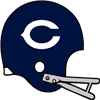
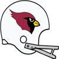

AFC Pro Bowl announced!The AFC Conference has announced their Pro Bowl squad for 1970.
QB Eric Ramos - Steelers (230/321, 2662 yds, 22 TD)
QB Chuck Pastrana - Broncos (247/353, 2685 yds, 25 TD)
RB Ed Podolak - Colts (401 att, 1497 yds, 15 TD, 19 rec, 163 yds, 0 TD)
RB Leroy Kelly - Steelers (348 att, 1446 yds, 11 TD, 30 rec, 229 yds, 3 TD)
RB Duane Thomas - Chiefs (329 att, 1579 yds, 11 TD, 7 rec, 73 yds, 1 TD)
FB Joseph Banks - Chargers (80 att, 209 yds, 5 TD)
G Doug Wilkerson - Browns (62 Pancakes)
G Ed Budde - Raiders (74 Pancakes)
T Winston Hill - Browns (91 Pancakes)
T Bob Brown - Raiders (112 Pancakes)
C Thomas Thames - Bills (56 Pancakes)
C Jim Otto - Raiders (57 Pancakes)
TE Ted Kwalick - Steelers (46 rec, 511 yds, 2 TD)
TE Raymond Chester - Chiefs (39 rec, 479 yds, 5 TD)
WR John Gilliam - Jets (84 rec, 762 yds, 2 TD)
WR Nicholas Salmon - Oilers (41 rec, 792 yds, 5 TD)
WR Marlin Briscoe - Chiefs (77 rec, 794 yds, 8 TD)
WR Lance Alworth - Chargers (55 rec, 946 yds, 10 TD)
WR Jack Clancy - Broncos (66 rec, 967 yds, 9 TD)
CB Lem Barney - Dolphins (70 Tck, 2 Int, 1 Def TD)
CB Mel Blount - Bills (74 Tck, 5 Int, 2 Def TD)
CB Robert James - Chargers (60 Tck, 1 Sck, 4 Int, 1 Def TD, 2 FF)
LB Frank Nunley - Colts (159 Tck, 4 Sck, 6 FF, 2 FR)
LB Mike Stratton - Bills (137 Tck, 3 Sck, 1 Int, 6 FF, 3 FR)
LB Jim Flanigan - Oilers (119 Tck, 6 Sck, 3 FF, 5 FR)
LB Ray May - Chiefs (162 Tck, 1 Int, 1 Def TD, 2 FF, 2 FR)
DT Arthur Lavoie - Chargers (49 Tck, 8 Sck, 1 FF)
DT Alan Page - Chargers (31 Tck, 6 Sck, 1 FF)
DE Jerry Mays - Jets (40 Tck, 8 Sck, 5 FF, 5 FR)
DE L.C. Greenwood - Jets (66 Tck, 17 Sck)
FS Willie Brown - Jets (63 Tck, 1 Sck, 1 Int, 2 FF, 2 FR)
FS Bernie Parrish - Browns (42 Tck, 3 Sck, 1 Int, 2 FF, 1 FR)
SS Jerry Logan - Patriots (71 Tck, 2 Sck, 1 Int, 1 FF, 1 FR)
SS Curtis Johnson - Steelers (70 Tck, 2 Sck, 1 Int, 1 FR)
K Michael Upton - Oilers (31/37 FG)
P Brian Egan - Browns (3954 yards, 46 inside 20)NFC Pro Bowl announced!The NFC Conference has announced their Pro Bowl squad for 1970.
QB Fran Tarkenton - Vikings (256/360, 2826 yds, 18 TD)
QB Billy Kilmer - 49ers (238/343, 2548 yds, 13 TD)
RB Ken Willard - Redskins (326 att, 1276 yds, 11 TD, 12 rec, 139 yds, 0 TD)
RB Donny Anderson - Lions (312 att, 1284 yds, 6 TD, 9 rec, 75 yds, 1 TD)
RB Calvin Hill - Falcons (374 att, 1711 yds, 14 TD, 16 rec, 124 yds, 0 TD)
FB John Travis - Cardinals (30 att, 125 yds, 1 TD)
G Jim Vellone - Lions (65 Pancakes)
G Larry Little - Falcons (59 Pancakes)
T Joe Taffoni - Eagles (77 Pancakes)
T Ralph Neely - Vikings (73 Pancakes)
C Jon Morris - Eagles (62 Pancakes)
C Jim Langer - Packers (59 Pancakes)
TE Bob Tucker - Redskins (32 rec, 414 yds, 3 TD)
TE Jerry Smith - Eagles (39 rec, 484 yds, 2 TD)
WR Archie Hoang - Packers (52 rec, 563 yds, 4 TD)
WR Charlie Joiner - Bears (38 rec, 554 yds, 6 TD)
WR Fred Biletnikoff - Lions (38 rec, 794 yds, 7 TD)
WR Paul Warfield - Vikings (75 rec, 1219 yds, 10 TD)
WR Ben Hart - 49ers (51 rec, 868 yds, 7 TD)
CB Roger Wehrli - Cowboys (62 Tck, 1 Int, 1 Def TD, 2 FF, 1 FR)
CB Mark Washington - Bears (44 Tck, 5 Int, 4 FF, 3 FR)
CB Emmitt Thomas - 49ers (55 Tck, 4 Int, 1 Def TD, 1 FF, 1 FR)
LB Bill Bergey - Giants (115 Tck, 5 Sck, 1 Def TD, 3 FF, 3 FR)
LB Dave Wilcox - Redskins (119 Tck, 6 Sck, 1 Int, 5 FF, 4 FR)
LB Young Tucker - Redskins (103 Tck, 8 Sck, 1 Int, 4 FF, 2 FR)
LB Dick Butkus - Lions (154 Tck, 5 Sck, 7 FF, 1 FR)
DT Dave Costa - Vikings (46 Tck, 8 Sck, 1 FF, 1 FR)
DT Walter Johnson - Vikings (34 Tck, 10 Sck)
DE Ben Davidson - Redskins (60 Tck, 11 Sck, 3 FF, 3 FR)
DE Verlon Biggs - Bears (40 Tck, 7 Sck, 3 FF, 1 FR)
FS Karl Kassulke - Eagles (75 Tck, 5 Sck, 3 Int, 1 Def TD)
FS Dana Keck - Falcons (61 Tck, 2 Int, 1 Def TD, 2 FR)
SS Cornell Green - Cowboys (85 Tck, 3 Sck, 3 FF)
SS Bill Thompson - Lions (92 Tck, 3 Sck, 1 Int, 1 FF, 1 FR)
K Jan Stenerud - Redskins (34/34 FG)
P Chuck Latourette - Bears (4665 yards, 36 inside 20)LB Fred Carr (Chi) wins Playoff MVP!NEW YORK -- The Chicago Bears' LB took home the 1970 Playoff MVP award today. Carr won the award by amassing playoff totals of 25 Tck, 1 Int, 1 Def TD, 2 FF, 1 FR.QB Fran Tarkenton (Min) wins League MVP! NEW YORK -- The Minnesota Vikings' QB was a landslide winner Friday in balloting by a nationwide panel of 50 sports writers and broadcasters who cover the league. Tarkenton won the MVP award by amassing season totals of 256/360, 2826 yds, 18 TD. NEW YORK -- The Minnesota Vikings' QB was a landslide winner Friday in balloting by a nationwide panel of 50 sports writers and broadcasters who cover the league. Tarkenton won the MVP award by amassing season totals of 256/360, 2826 yds, 18 TD.
"I'm honored to receive this award because of the number of other worthy candidates who had some great years," Tarkenton said. "It was just fun for me, truly, to watch them. I'm just glad to be a part of it."
LB Dick Butkus (Det) wins Defensive Player of the Year!NEW YORK -- In his own view, Dick Butkus put together his best professional season in 1970. How appropriate, then, that he is the Wolverine Studios Sports Newtwork 1970 Defensive Player of the Year.
The versatile Butkus had 154 tackles, 5 sacks, 0 interceptions, and 7 forced fumbles with 0 defensive touchdowns, and was a key to the Lions' turnaround on defense. His role on the defense earned Butkus a majority of votes Tuesday from a nationwide panel of 50 sports writers and broadcasters who cover the league.RB Leroy Kelly (Pit) wins Offensive Player of the Year! NEW YORK -- That blur speeding away from opposing defenses and running off with the Wolverine Studios Sports Network 1970 Offensive Player of the Year award is Leroy Kelly. Considered one of the fastest men in pro football, Kelly was uncatchable in racking up 1446 rushing yards on the season. NEW YORK -- That blur speeding away from opposing defenses and running off with the Wolverine Studios Sports Network 1970 Offensive Player of the Year award is Leroy Kelly. Considered one of the fastest men in pro football, Kelly was uncatchable in racking up 1446 rushing yards on the season.
That earned the back 38 1/2 votes Wednesday from a nationwide panel of 50 sports writers and broadcasters who cover the league.
"I kind of realize what I did and I feel like I had a dream season," said Kelly, who scored 11 touchdowns.
RB Duane Thomas (KC) wins Offensive Rookie of the Year! NEW YORK -- The Kansas City Chiefs' RB was a landslide winner Friday in balloting by a nationwide panel of 50 sports writers and broadcasters who cover the league. Thomas won the Rookie of the Year award by amassing season totals of 329 att, 1579 yds, 11 TD, 7 rec, 73 yds, 1 TD. NEW YORK -- The Kansas City Chiefs' RB was a landslide winner Friday in balloting by a nationwide panel of 50 sports writers and broadcasters who cover the league. Thomas won the Rookie of the Year award by amassing season totals of 329 att, 1579 yds, 11 TD, 7 rec, 73 yds, 1 TD.
LB Jack Reynolds (Cle) wins Defensive Rookie of the Year! NEW YORK -- The Cleveland Browns' LB was a landslide winner Friday in balloting by a nationwide panel of 50 sports writers and broadcasters who cover the league. Reynolds won the Rookie of the Year award by amassing season totals of 138 Tck, 3 Sck, 1 Int, 2 FF, 1 FR. NEW YORK -- The Cleveland Browns' LB was a landslide winner Friday in balloting by a nationwide panel of 50 sports writers and broadcasters who cover the league. Reynolds won the Rookie of the Year award by amassing season totals of 138 Tck, 3 Sck, 1 Int, 2 FF, 1 FR.
1970 Super BowlThe Chicago Bears have defeated the Buffalo Bills in the 1970 Super Bowl.
The final score was Bears 17 - Bills 12.
Paul Feldhausen - T had a dominant game on offense playing a key part in the victory.
On defense Verlon Biggs - DE had a stellar outing helping seal the win.Chicago Bears re-signs Jeremy Bryson as Defensive CoordinatorThe Bears have announced that they have given Jeremy Bryson a new contract. Bryson will continue to serve as Defensive Coordinator for 5 years earning 3 million pr year.Buffalo Bills re-signs Jeremy Otero as Head Coach The Bills have announced that they have given Jeremy Otero a new contract. Otero will continue to serve as Head Coach for 5 years earning 6.5 million pr year. The Bills have announced that they have given Jeremy Otero a new contract. Otero will continue to serve as Head Coach for 5 years earning 6.5 million pr year.
NFC Championship GameThe Chicago Bears have defeated the Dallas Cowboys in the 1970 NFC Championship Game.
The final score was Bears 17 - Cowboys 15.
Frank Pitts - WR had a dominant game on offense even while his team lost.
On defense Fred Carr - LB had a stellar outing helping seal the win.AFC Championship GameThe Buffalo Bills have defeated the San Diego Chargers in the 1970 AFC Championship Game.
The final score was Chargers 27 - Bills 30.
Lance Alworth - WR had a dominant game on offense even while his team lost.
On defense Mike Stratton - LB had a stellar outing helping seal the win.NFC Divisional RoundThe Chicago Bears have defeated the San Francisco 49ers in the 1970 NFC Divisional Round.
The final score was Bears 15 - 49ers 7.
Arthur Winfrey - K had a dominant game on offense playing a key part in the victory.
On defense Bob Matheson - LB had a stellar outing providing a silver lining to the loss.NFC Divisional Round The Dallas Cowboys have defeated the Washington Redskins in the 1970 NFC Divisional Round. The Dallas Cowboys have defeated the Washington Redskins in the 1970 NFC Divisional Round.
The final score was Cowboys 24 - Redskins 3.
Steve Owens - RB had a dominant game on offense playing a key part in the victory.
On defense John Ebersole - LB had a stellar outing providing a silver lining to the loss.
AFC Divisional RoundThe Buffalo Bills have defeated the Pittsburgh Steelers in the 1970 AFC Divisional Round.
The final score was Steelers 3 - Bills 6.
Doug Davis - T had a dominant game on offense playing a key part in the victory.
On defense Mel Blount - CB had a stellar outing helping seal the win.AFC Divisional Round The San Diego Chargers have defeated the Miami Dolphins in the 1970 AFC Divisional Round. The San Diego Chargers have defeated the Miami Dolphins in the 1970 AFC Divisional Round.
The final score was Dolphins 24 - Chargers 34.
Terry Bradshaw - QB had a dominant game on offense playing a key part in the victory.
On defense Ike Kelley - LB had a stellar outing helping seal the win.
Week 14: DE L.C. Greenwood (NYJ) wins Defensive Player of the Week DE Greenwood absolutely dominated in the Jets 16-14 game with the Buffalo Bills. He finished with 7 Tck, 4 Sck. DE Greenwood absolutely dominated in the Jets 16-14 game with the Buffalo Bills. He finished with 7 Tck, 4 Sck.
Week 14: RB Duane Thomas (KC) wins Offensive Player of the WeekThe honor comes after Thomas's 27 att, 258 yds, 4 TD, 2 rec, 56 yds, 0 TD performance against the Baltimore Colts. Thomas from West Texas A&M was selected in round 1, 0 years ago.
Thomas now has 1579 Rushing Yards and 11 Touchdowns for the season.Game Recaps for Week 1449ers - 16, Lions - 10
Jets - 16, Bills - 14
Dolphins - 14, Oilers - 12
Raiders - 17, Saints - 10
Cardinals - 17, Eagles - 3
Steelers - 28, Broncos - 23
Chiefs - 42, Colts - 17
Redskins - 23, Patriots - 20
Cowboys - 24, Giants - 17
Falcons - 28, Vikings - 25
Bengals - 24, Browns - 23
Packers - 45, Rams - 16
Bears - 10, Chargers - 3Washington Redskins re-signs Robert Wilder as Offensive Coordinator The Redskins have announced that they have given Robert Wilder a new contract. Wilder will continue to serve as Offensive Coordinator for 5 years earning 1 million pr year. The Redskins have announced that they have given Robert Wilder a new contract. Wilder will continue to serve as Offensive Coordinator for 5 years earning 1 million pr year.
Game of the Week: Pittsburgh Steelers at Denver BroncosOur Expert Predictions:
Jeremy Piper : Denver Broncos
The Broncos are for real! The way they win this game will tell a lot about what they are as a team.
Mary Moore : Pittsburgh Steelers
The leadership on the Steelers is great. You look at guys like Doug Goodwin - RB and what he does for a team. Leadership like that helps you win games. But it will be much closer than many think..
Jim Nox : Denver Broncos
They field one of the most underestimated defenses.
Darren Francis : Pittsburgh Steelers
I do not think you get very far against their offense. They are 2nd in the league pass completion percentage. They are 3rd in the league passing touchdowns with 19. They are 3rd in the league points scored per game. They average 25.8!
Dissatisfaction after Rams-Lions game! Estes Banks was not happy in an interview after the Rams lost to the Lions. 'Surely, we have to take responsibility, but they were playing dirty, and it is a testament to their character' said the Rams Estes Banks - RB. He continued: 'The Lions' players will likely take offense to this, but I do not care. It is what it is, they did not deserve to win'.' Estes Banks was not happy in an interview after the Rams lost to the Lions. 'Surely, we have to take responsibility, but they were playing dirty, and it is a testament to their character' said the Rams Estes Banks - RB. He continued: 'The Lions' players will likely take offense to this, but I do not care. It is what it is, they did not deserve to win'.'
Week 13: RB John Fuqua (Hou) wins Offensive Player of the Week The honor comes after Fuqua's 27 att, 133 yds, 1 TD performance against the Cleveland Browns. Fuqua from Morgan State was selected in round 6, 1 years ago. The honor comes after Fuqua's 27 att, 133 yds, 1 TD performance against the Cleveland Browns. Fuqua from Morgan State was selected in round 6, 1 years ago.
Fuqua now has 1132 Rushing Yards and 3 Touchdowns for the season.
Bull still having red flagsThe Steelers' front office has announced that they have had inquiries from the league disciplinary committee regarding Sam Bull - C. With the off field issues of Sam Bull - C boiling up again one has to wonder how long of a leash he has with the Steelers. Bull could play many more years, but to do that he will need to rid himself of the bad elements distracting him and causing headaches for his team.Week 13: DT Dave Costa (Min) wins Defensive Player of the WeekDT Dave Costa of the Minnesota Vikings has earned the Defensive Player of the Week award. Costa finished with 6 Tck, 3 Sck.Game Recaps for Week 13Oilers - 26, Browns - 17
Redskins - 38, Cardinals - 7
Broncos - 27, Chiefs - 14
Giants - 30, Rams - 6
Bills - 16, Raiders - 14
Packers - 24, Patriots - 7
49ers - 13, Saints - 10
Steelers - 24, Bengals - 17
Jets - 20, Eagles - 17
Bears - 10, Cowboys - 7
Colts - 20, Falcons - 17
Vikings - 17, Lions - 3
Chargers - 37, Dolphins - 31Week 13: SS Robert Holloman (Bos) has suffered a major injury! The Boston Patriots' SS Robert Holloman has suffered an injury: Out (12-16 weeks). The Boston Patriots' SS Robert Holloman has suffered an injury: Out (12-16 weeks).
Game of the Week: Chicago Bears at Dallas CowboysOur Expert Predictions:
Jeremy Piper : Dallas Cowboys
Head coach John Davis puts them over the top in this game. He makes great offensive adjustments. He is one of the best defensive minds. This will be an action-packed affair.
Mary Moore : Dallas Cowboys
Look for them to continue their winstreak. This will be an action-packed affair.
Jim Nox : Dallas Cowboys
Certainly, this defense will have a good game. They are 2nd in points allowed, averaging only 11.9. They are 1st in run defense. Giving up only 95.3 yards per game. They are 5th in forced fumbles. There will be some very good football to watch here.
Darren Francis : Chicago Bears
Replace the batteries in your remote. You do not want to miss this game.
Defense dominates in New York. The Giants defensive line is disrupting offensive lines so far this season with a total of 27 sacks, 4 forced fumbles and 145 tackles in 12 games. The Giants defensive line is disrupting offensive lines so far this season with a total of 27 sacks, 4 forced fumbles and 145 tackles in 12 games.
Kansas City Chiefs take home the upset victory!The Kansas City Chiefs surprises everyone with an unlikely road win against Oakland Raiders.
The Raiders never manage to take control of the game, while the Chiefs kept grinding and drove the victory home. The Raiders players had expected an easy victory, and this will be a bitter loss and a tough blow to the self-respect of the program. Meanwhile the Chiefs fans are ecstatic and are already entertaining thoughts about a cinderella future.Coach Showdown with Simon Sly (Season 1970 Week 13)Time for this weeks get to know your coaches. As always, Simon Sly deliver with this weeks coach comparison. I will spare you the meandering and cut to the chase.
CHARLES SPAIN, OFFENSIVE COORDINATOR, ST. LOUIS CARDINALS
The Cardinals currently sit at 3-9.
Charles Spain likes to mix it up on offense, switching between aggressive and conservative styles. He is a silent, strong leader. He does his job meticulously without making unnecessary waves, and expects those around him to do the same.
Charles Spain runs a run first Pro Style Hybrid offense. His offense features a lot of outside runs. His offense features a dink and dunk approach, with short easy passes. The passing game is predicated on spreading the ball around to multiple targets. He likes receivers who can stretch the field.
They are 26th in the league pass completion percentage. They are 26th in the league passing touchdowns with 3. They are 26th in the league passing yards per game. Averaging 108.3.They are 19th in the league in sacks allowed.They are 26th in the league in pancakes.They are 22nd in the league in passes of more than 20 yards.They are 25th in the league average yards per rush.They are 18th in the league rushing touchdowns with 10.They are 26th in the league rushing yards per game. They average 100.3.They are 25th in the league points scored per game. With an average of 12.6.
Spain is a better offisive mind than Matos.
Spain seems a little bit smarter than Matos.
Spain is better suited to lead a team than Matos.
Spain prepares better than Matos.
MORRIS MATOS, OFFENSIVE COORDINATOR, HOUSTON OILERS
The Oilers currently sit at 6-6.
Morris Matos wants to be aggressive on offense. His attitude is relaxed, and he is good at making everyone around him feel comfortable and promotes a friendly and unceremonial atmosphere in the organisation.
Morris Matos runs a pass heavy Spread offense. His offense features a lot of outside runs. Matos likes to go over the top of the defense in the passing game. The passing game is predicated on spreading the ball around to multiple targets. He prefers to have different types of wide recievers, to have a flexible passing game.
They are 16th in the league pass completion percentage.
They are 3rd in the league passing touchdowns with 18.
They are 11th in the league passing yards per game. Averaging 168.1.
They are 18th in the league in sacks allowed.
They are 8th in the league in pancakes.
They are 13th in the league in passes of more than 20 yards.
They are 18th in the league average yards per rush.
They are 21st in the league rushing touchdowns with 8.
They are 12th in the league rushing yards per game. They average 147.6.
They are 10th in the league points scored per game. With an average of 20.8.
Week 12: DE Verlon Biggs (Chi) wins Defensive Player of the WeekDE Biggs absolutely dominated in the Bears 17-13 game with the Detroit Lions. He finished with 2 Tck, 2 Sck, 1 FF, 1 FR.Week 12: RB Calvin Hill (ATL) wins Offensive Player of the WeekThe honor comes after Hill's 26 att, 202 yds, 2 TD performance against the Atlanta Falcons. Hill from Yale was selected in round 3, 1 years ago.
Hill now has 1399 Rushing Yards and 12 Touchdowns for the season.Game Recaps for Week 12Bills - 3, Patriots - 0
Steelers - 35, Oilers - 21
Vikings - 33, Packers - 14
Eagles - 34, Browns - 17
Chiefs - 24, Raiders - 20
Dolphins - 22, Falcons - 21
Bengals - 22, Saints - 7
Colts - 24, Jets - 16
Broncos - 45, Chargers - 24
Bears - 17, Lions - 13
Cowboys - 27, Redskins - 7
Cardinals - 27, Giants - 7
49ers - 24, Rams - 17Houston Oilers re-signs Edmundo Martel as Head CoachThe Oilers have announced that they have given Edmundo Martel a new contract. Martel will continue to serve as Head Coach for 3 years earning 8.5 million pr year.Game of the Week: Washington Redskins at Dallas CowboysOur Expert Predictions:
Jeremy Piper : Washington Redskins
Last game was a fluke. They will win again this week. I expect some incredible plays in this game.
Mary Moore : Dallas Cowboys
In the context of this game, it is likely that George Andrie - DE is going to be a difference maker on the Cowboys defense.
Jim Nox : Washington Redskins
This may be a pivotal game for their season.
Darren Francis : Dallas Cowboys
Of course the Cowboys win. Have you been living under a rock? This will be a very up and down affair.
Chargers racking up yards!The offense of the Chargers is stomping a mudhole in everybody this year, posting 4211 total yards and 333 points thus far in 11 games. Quarterback Terry Bradshaw - QB and receiver Lance Alworth - WR have hooked up to the tune of 811 yards this season, while Running Back Jim Kiick - RB has juked, jived and steamrolled his way for 684. The hogs on the line has steamrolled opponents for 264 pancakes this season while giving up only 8 quarterback sacks.Big boys shows the way in Oakland. The O-Line from Raiders are smashing opponents this year. They’ve given up only 8 sacks in 11 games while collecting 382 pancakes. The O-Line from Raiders are smashing opponents this year. They’ve given up only 8 sacks in 11 games while collecting 382 pancakes.
St. Louis Cardinals pull off the upset!With an outstanding effort the St. Louis Cardinals pull off the upset against San Francisco 49ers.
Everyone had expected the San Francisco 49ers to handle the St. Louis Cardinals with ease, but the Cardinals just wanted it more. This was really a must win game for the 49ers, and the loss will surely put a dent in their confidence.Browns lost. Marchlewski is ok with that.Frank Marchlewski pointed no fingers and saw the upside to the Browns loss. 'Surely, we lost, but we were playing well. I think this is a testament to our character and preparation' said Marchlewski. He added: 'The Colts are a good team, but I we played our hearts out and kept grinding. We learned a lot from this game, and it will help us in the future'.Kolb still having red flags The commisioner, in a recent interview, hinted that new investigations were under way concerning Packers' T Jon Kolb Jon Kolb has had trouble with the law earlier in his career, and has been unable to distance himself from bad influences off the field. This has the characteristics of an ongoing headache for the Packers. The commisioner, in a recent interview, hinted that new investigations were under way concerning Packers' T Jon Kolb Jon Kolb has had trouble with the law earlier in his career, and has been unable to distance himself from bad influences off the field. This has the characteristics of an ongoing headache for the Packers.
Week 11: RB Larry Csonka (StL) wins Offensive Player of the WeekThe honor comes after Csonka's 33 att, 138 yds, 3 TD performance against the San Francisco 49ers. Csonka from Syracuse was selected in round 1, 2 years ago.
Csonka now has 706 Rushing Yards and 6 Touchdowns for the season.Week 11: CB Robert James (SD) wins Defensive Player of the WeekCB James's ball hawking ability was on display in the Chargers 42-14 game with the Oakland Raiders. He finished with 4 Tck, 1 Int, 1 Def TD.
"Robert has the unique ability to make plays and generate turnovers." -Chargers Defensive CoordinatorGame Recaps for Week 11Cardinals - 30, 49ers - 10
Packers - 13, Dolphins - 7
Chargers - 42, Raiders - 14
Bills - 33, Colts - 6
Oilers - 30, Patriots - 10
Broncos - 24, Bengals - 18
Bears - 9, Browns - 0
Cowboys - 24, Eagles - 10
Steelers - 40, Lions - 10
Saints - 10, Chiefs - 7
Falcons - 21, Rams - 15
Vikings - 22, Redskins - 14
Jets - 17, Giants - 6Los Angeles Rams re-signs Willie Morgan as Head CoachThe Rams have announced that they have given Willie Morgan a new contract. Morgan will continue to serve as Head Coach for 4 years earning 6.5 million pr year.Chicago Bears re-signs Robert Castro as Offensive CoordinatorThe Bears have announced that they have given Robert Castro a new contract. Castro will continue to serve as Offensive Coordinator for 2 years earning 3 million pr year.Detroit Lions re-signs Joan Mortensen as Offensive CoordinatorThe Lions have announced that they have given Joan Mortensen a new contract. Mortensen will continue to serve as Offensive Coordinator for 5 years earning 4 million pr year.Game of the Week: Minnesota Vikings at Washington RedskinsOur Expert Predictions:
Jeremy Piper : Washington Redskins
The better team wins. The Redskins are the better team. No argument. Really this could go either way, but you will never get me to admit it.
Mary Moore : Minnesota Vikings
Looking at how the teams match up, you would be a fool not to think that the Vikings rely on Wally Hilgenberg - LB on their defense. This is no reason to worry, he is great. There will be some wild plays in this game.
Jim Nox : Washington Redskins
They might even win with three touchdowns.
Darren Francis : Washington Redskins
Their offense will step up this game. They are 3rd in the league rushing touchdowns with 17. They are 4th in the league rushing yards per game. They average 158.5! They are 5th in the league points scored per game. They average 26.4! If they do not win, I have to buy cake for the entire office. That is how sure I am.
Cincinnati Bengals pull off the upset! With an outstanding effort the Cincinnati Bengals pull off the upset against Minnesota Vikings. With an outstanding effort the Cincinnati Bengals pull off the upset against Minnesota Vikings.
Everyone had expected the Minnesota Vikings to handle the Cincinnati Bengals with ease, but the Bengals just wanted it more. This was really a must win game for the Vikings, and the loss will surely put a dent in their confidence.
Zecher still having red flagsA person familiar with the Bengals says that they are increasingly worries about the off field red flags of Rich Zecher - DT. Rich Zecher - DT is making it difficult for himself and the Bengals. Zecher could be a productive player, but he must be able to stay out of trouble or teams will tire off him sooner rather than later.Coach Showdown with Simon Sly (Season 1970 Week 11)You know what time it is. It is time for your weekly coach comparison with Simon Sly. I will spare you the meandering and cut to the chase.
ROGER DUNLAP, DEFENSIVE COORDINATOR, WASHINGTON REDSKINS
The Redskins currently sit at 9-1.
Roger Dunlap favors an aggressive defense. His attitude is relaxed, and he is good at making everyone around him feel comfortable and promotes a friendly and unceremonial atmosphere in the organisation.
Roger Dunlap runs a 3-4 defense. His system requires top notch cornerbacks. He prefers mixing up coverage. He targets the rungame, daring the offense to pass. Dunlap aims to field versatile linebackers.
They are 4th in sacks with 31.
They are 2nd in points allowed, averaging 11.3.
They are 3rd in pass defense with 128.9 yards given up per game.
They are 1st in run defense. Giving up 91.7 yards per game.
They are 10th in interceptions with 5.
They are 2nd in the league in tackles for loss.
They are 6th in forced fumbles.
Dunlap is better suited to lead a team than Stevens.
JEROME STEVENS, DEFENSIVE COORDINATOR, MIAMI DOLPHINS
The Dolphins currently sit at 7-3.
Jerome Stevens favors an aggressive defense. He adapts his demeanor to the situation, and does whatever he thinks it takes to get through to his players and co-workers.
Jerome Stevens runs a 5-2 Hybrid defense. The scheme depends on dominating in the trenches. He prefers mixing up coverage. He targets the rungame, daring the offense to pass. He wants defensive linemen who can help in runsupport. He wants fast linebackers, who can help in coverage.
They are 14th in sacks with 17.
They are 5th in points allowed, averaging 14.9.
They are 2nd in pass defense with 114.3 yards given up per game.
They are 11th in run defense. Giving up 128.9 yards per game.
They are 26th in interceptions with 1.
They are 8th in the league in tackles for loss.
They are 15th in forced fumbles.
Stevens outperforms Dunlap in scouting.
Stevens is significantly better than Dunlap in judging player potential.
Stevens is a much sharper defensive mind than Dunlap.
Stevens is not as rigid as Dunlap.
Stevens seems a little bit smarter than Dunlap.
Stevens makes his players hit the weight room more often than Dunlap.
Week 10: LB Lee Roy Caffey (Det) wins Defensive Player of the WeekLB Lee Roy Caffey of the Detroit Lions has earned the Defensive Player of the Week award. Caffey finished with 17 Tck, 2 Sck.Week 10: RB Ken Willard (Was) wins Offensive Player of the WeekThe honor comes after Willard's 23 att, 202 yds, 2 TD performance against the New Orleans Saints. Willard from North Carolina was selected in round 2, 5 years ago.
Willard now has 993 Rushing Yards and 7 Touchdowns for the season.Game Recaps for Week 10Raiders - 55, Broncos - 34
Browns - 14, Bills - 3
Colts - 20, Patriots - 17
Bears - 13, 49ers - 7
Chargers - 41, Chiefs - 28
Giants - 20, Eagles - 7
Bengals - 13, Vikings - 10
Cowboys - 37, Cardinals - 0
Lions - 18, Rams - 17
Packers - 27, Falcons - 21
Steelers - 27, Oilers - 12
Dolphins - 23, Jets - 14
Redskins - 41, Saints - 7Buffalo Bills re-signs Everette Snow as Defensive CoordinatorThe Bills have announced that they have given Everette Snow a new contract. Snow will continue to serve as Defensive Coordinator for 4 years earning 2.5 million pr year.Pittsburgh Steelers re-signs Edwin Marx as Defensive CoordinatorThe Steelers have announced that they have given Edwin Marx a new contract. Marx will continue to serve as Defensive Coordinator for 7 years earning 2.5 million pr year.Miami Dolphins re-signs Jerome Stevens as Defensive Coordinator The Dolphins have announced that they have given Jerome Stevens a new contract. Stevens will continue to serve as Defensive Coordinator for 4 years earning 1 million pr year. The Dolphins have announced that they have given Jerome Stevens a new contract. Stevens will continue to serve as Defensive Coordinator for 4 years earning 1 million pr year.
Dallas Cowboys re-signs John Davis as Head CoachThe Cowboys have announced that they have given John Davis a new contract. Davis will continue to serve as Head Coach for 7 years earning 1 million pr year.Game of the Week: Detroit Lions at Los Angeles RamsOur Expert Predictions:
Jeremy Piper : Detroit Lions
For this game, I think we need to recognize that Dick Butkus - LB is the kind of player you just cannot contain for a whole game.
Mary Moore : Los Angeles Rams
Leadership matters in games like this. And when I look at the Rams and the leaders they have - Eddie Meador - FS, Charley Cowan - T and Bill Baird - CB - I think this gets them the win.
Jim Nox : Los Angeles Rams
I do not think you get very far against their offense. They are 1st in the league average yards per rush. They are 2nd in the league rushing touchdowns with 17. They are 1st in the league rushing yards per game. They average 205.8! They are 2nd in the league points scored per game. They average 28.8!
Darren Francis : Detroit Lions
I really like their defense. They are 3rd in the league pass average yards per rush. Can't lose.
Pittsburgh Steelers defense dominates!The Steelers' defense is giving people the business this season. In 9 games they’ve surrendered only 1988 total yards and 89 points. Tommy Nobis - LB is the field general of the defense with 63 stops on the year. Could the Steel Curtain be back in Pittsburgh?Denver Broncos surprise everyone!With an outstanding effort the Denver Broncos pull off the upset against Houston Oilers.
Everyone had expected the Houston Oilers to handle the Denver Broncos with ease, but the Broncos just wanted it more. This was really a must win game for the Oilers, and the loss will surely put a dent in their confidence.Week 9: RB Harry Jones (ATL) wins Offensive Player of the WeekThe honor comes after Jones's 11 att, 119 yds, 3 TD performance against the New Orleans Saints. Jones from Arkansas was selected in round 5, 3 years ago.
Jones now has 295 Rushing Yards and 4 Touchdowns for the season.Week 9: LB Andy Russell (GB) wins Defensive Player of the WeekLB Russell absolutely dominated in the Lions 20-13 game with the Green Bay Packers. He finished with 14 Tck, 4 Sck, 1 FF, 1 FR.Game Recaps for Week 9Vikings - 16, Bears - 10
Bills - 23, 49ers - 12
Dolphins - 9, Patriots - 6
Jets - 27, Colts - 24
Cowboys - 22, Bengals - 7
Raiders - 16, Steelers - 13
Lions - 20, Packers - 13
Chargers - 41, Browns - 26
Rams - 28, Chiefs - 5
Falcons - 41, Saints - 2
Giants - 28, Cardinals - 16
Redskins - 26, Eagles - 13
Broncos - 27, Oilers - 17Pittsburgh Steelers re-signs Joseph Conn as Head CoachThe Steelers have announced that they have given Joseph Conn a new contract. Conn will continue to serve as Head Coach for 6 years earning 6.5 million pr year.Washington Redskins re-signs Roger Dunlap as Defensive CoordinatorThe Redskins have announced that they have given Roger Dunlap a new contract. Dunlap will continue to serve as Defensive Coordinator for 5 years earning 2.5 million pr year.Chicago Bears re-signs Clark Magee as Head CoachThe Bears have announced that they have given Clark Magee a new contract. Magee will continue to serve as Head Coach for 2 years earning 3 million pr year.Game of the Week: Oakland Raiders at Pittsburgh SteelersOur Expert Predictions:
Jeremy Piper : Pittsburgh Steelers
I have a lot of respect for head coach Joseph Conn. He is doing great things in Pittsburgh. He is running a great offense. They will put up a lot of points.
Mary Moore : Oakland Raiders
For this game, I cannot help by think that it centers on Jim Smith - FS who is having a great season. Look for him to continue padding his stats this week.
Jim Nox : Oakland Raiders
And you can take that with you to the bank.
Darren Francis : Oakland Raiders
Just win baby.
Week 8: RB Duane Thomas (KC) wins Offensive Player of the WeekThe honor comes after Thomas's 26 att, 224 yds, 2 TD, 1 rec, 6 yds, 1 TD performance against the Kansas City Chiefs. Thomas from West Texas A&M was selected in round 1, 0 years ago.
Thomas now has 890 Rushing Yards and 7 Touchdowns for the season.Coach Showdown with Simon Sly (Season 1970 Week 9)As always I am Simon Sly with your weekly coach comparison. Let us jump right in.
HAROLD GOULET, OFFENSIVE COORDINATOR, DALLAS COWBOYS
The Cowboys currently sit at 6-2.
Harold Goulet likes to mix it up on offense, switching between aggressive and conservative styles. Professionalism is the key for him. He demands accountability from everyone around him.
Harold Goulet runs a run first Spread Hybrid offense. He wants running backs who can also block. He runs mostly from power formations. His offense features a dink and dunk approach, with short easy passes.
They are 14th in the league pass completion percentage. They are 14th in the league passing touchdowns with 8. They are 12th in the league passing yards per game. Averaging 163.4.They are 9th in the league in sacks allowed.They are 23rd in the league in pancakes.They are 3rd in the league in passes of more than 20 yards.They are 3rd in the league average yards per rush.They are 1st in the league rushing touchdowns with 20.They are 2nd in the league rushing yards per game. They average 161.4.They are 1st in the league points scored per game. With an average of 30.9.
Goulet is slightly better than Dwyer at estimating player potential.
THEODORE DWYER, OFFENSIVE COORDINATOR, GREEN BAY PACKERS
The Packers currently sit at 3-5.
Theodore Dwyer runs his offense conservatively. His attitude is relaxed, and he is good at making everyone around him feel comfortable and promotes a friendly and unceremonial atmosphere in the organisation.
Theodore Dwyer runs a pass heavy West Coast offense. His offense features a lot of outside runs. Fullbacks are not utilized much. It's about taking what the defense gives you in the passing game, according to Dwyer. His offense relies on big wide receivers.
They are 3rd in the league pass completion percentage.
They are 15th in the league passing touchdowns with 7.
They are 18th in the league passing yards per game. Averaging 141.5.
They are 10th in the league in sacks allowed.
They are 13th in the league in pancakes.
They are 24th in the league in passes of more than 20 yards.
They are 25th in the league average yards per rush.
They are 26th in the league rushing touchdowns with 2.
They are 25th in the league rushing yards per game. They average 115.4.
They are 21st in the league points scored per game. With an average of 14.9.
Dwyer outperforms Goulet in assessing player ability.
Dwyer is a better offisive mind than Goulet.
Dwyer outperforms Goulet in player development.
Dwyer is not as rigid as Goulet.
Dwyer seems a little bit smarter than Goulet.
Dwyer motivates his team a little better than Goulet.
Dwyer makes his players hit the weight room more often than Goulet.
Dwyer prepares better than Goulet.
Dwyer works with young players somewhat better than Goulet.
Week 8: LB Jesse Jett (Bos) wins Defensive Player of the WeekLB Jett absolutely dominated in the Patriots 31-10 game with the New York Jets. He finished with 9 Tck, 3 Sck, 1 FF.Game Recaps for Week 8Raiders - 27, Chargers - 24
Cardinals - 31, Broncos - 7
Eagles - 45, Chiefs - 31
Vikings - 38, 49ers - 0
Lions - 23, Falcons - 9
Rams - 55, Saints - 7
Redskins - 28, Dolphins - 13
Bears - 25, Packers - 22
Patriots - 31, Jets - 10
Oilers - 20, Bengals - 10
Cowboys - 38, Giants - 7
Steelers - 27, Browns - 6
Bills - 40, Colts - 12Detroit Lions re-signs Larry Good as Head CoachThe Lions have announced that they have given Larry Good a new contract. Good will continue to serve as Head Coach for 3 years earning 6.5 million pr year.Trade AlertThe Giants trade R.C. Gamble - RB and a Giants 1972 5th Round Pick to the Saints for Floyd Little - RB.Game of the Week: Cleveland Browns at Pittsburgh SteelersOur Expert Predictions:
Jeremy Piper : Cleveland Browns
Looking at the teams, there is every reason to think that Mel Renfro - CB needs to show up, but if he does the Browns will be shutting people down. Really this could go either way, but you will never get me to admit it.
Mary Moore : Pittsburgh Steelers
They will keep their winstreak going.
Jim Nox : Pittsburgh Steelers
I think having a leader like Doug Goodwin - RB is the kind of thing that will help the Steelers win this game. This will be a very up and down affair.
Darren Francis : Pittsburgh Steelers
They will rely on their defense to pull them through. They are 1st in points allowed, averaging only 9.6. They are 1st in pass defense. They only give up 109.7 per game. They are 1st in interceptions with 6. Boy, oh boy am I looking forward to this.
Kolb in trouble again?Out of Green Bay, we have the usual reports about Jon Kolb, the T. Jon Kolb has had trouble with the law earlier in his career, and has been unable to distance himself from bad influences off the field. This has the characteristics of an ongoing headache for the Packers.Week 7: RB Ed Podolak (Bal) wins Offensive Player of the Week The honor comes after Podolak's 28 att, 220 yds, 3 TD performance against the Baltimore Colts. Podolak from Iowa was selected in round 1, 1 years ago. The honor comes after Podolak's 28 att, 220 yds, 3 TD performance against the Baltimore Colts. Podolak from Iowa was selected in round 1, 1 years ago.
Podolak now has 830 Rushing Yards and 7 Touchdowns for the season.
Week 7: LB Bill Bergey (NYG) wins Defensive Player of the WeekLB Bill Bergey of the New York Giants has earned the Defensive Player of the Week award. Bergey finished with 12 Tck, 1 Sck, 1 Def TD, 1 FF, 1 FR.Game Recaps for Week 7Vikings - 27, Lions - 10
49ers - 38, Saints - 10
Cowboys - 20, Falcons - 10
Rams - 34, Chargers - 30
Bears - 38, Giants - 23
Bills - 22, Jets - 10
Dolphins - 41, Colts - 31
Redskins - 24, Eagles - 17
Raiders - 33, Broncos - 20
Oilers - 24, Chiefs - 17
Steelers - 13, Patriots - 3
Browns - 23, Bengals - 20
Packers - 12, Cardinals - 6Week 7: T Joe Carollo (Min) has suffered a major injury!The Minnesota Vikings' T Joe Carollo has suffered an injury: Out (12-16 weeks).Game of the Week: Detroit Lions at Minnesota VikingsOur Expert Predictions:
Jeremy Piper : Detroit Lions
I think having a team players like Donny Anderson - RB is the kind of thing that will help the Lions win this game. It might be a high scoring game.
Mary Moore : Detroit Lions
I really think their defense will make the difference. They are 4th in points allowed, averaging only 14.7. They are 3rd in run defense. Giving up only 106.3 yards per game. They are 2nd in the league pass average yards per rush.
Jim Nox : Minnesota Vikings
I think their offense is really good. They are 5th in the league passing touchdowns with 9. They are 1st in the league passing yards per game. They average 219! They are 1st in the league in sacks allowed. They are 4th in the league points scored per game. They average 25.2!
Darren Francis : Detroit Lions
I know they lost their last game, but they will get the W this week. But it will be much closer than many think..
Defense dominates in Houston.The Oilers defensive front is bedeviling their enemies so far this season with a total of 9 sacks, 2 forced fumbles and 87 tackles in 6 games.Coach Showdown with Simon Sly (Season 1970 Week 7)Time for this weeks get to know your coaches. As always, Simon Sly deliver with this weeks coach comparison. We have an odd couple for you this week.
JERROD TATUM, HEAD COACH, BOSTON PATRIOTS
The Patriots currently sit at 3-3.
Jerrod Tatum wants his offense and defense to play smart, conservative football. Let the other team make the mistakes. He adapts his demeanor to the situation, and does whatever he thinks it takes to get through to his players and co-workers.
Tatum is significantly better than Betz in judging player potential.
Tatum has a slightly better grasp of coaching defense than Betz.
WILLIAM BETZ, HEAD COACH, BALTIMORE COLTS
The Colts currently sit at 3-3.
William Betz wants to be aggressive on both sides of the ball. He loves football, and it shows that this is his dreamjob. His eagerness to discuss all aspects of the game is infectious in an organisation.
Betz outperforms Tatum in scouting.
Betz is slightly more detail oriented than Tatum.
Betz is a better offisive mind than Tatum.
Betz is not as rigid as Tatum.
Week 6: DE Verlon Biggs (Chi) wins Defensive Player of the WeekDE Biggs absolutely dominated in the Bears 31-14 game with the Detroit Lions. He finished with 3 Tck, 2 Sck, 1 FF.Week 6: RB Calvin Hill (ATL) wins Offensive Player of the WeekWeek 6's Offensive Player of the Week is Running Back Calvin Hill. His 16 att, 193 yds, 2 TD performance stood out in the 28 to 27 victory for the San Francisco 49ers.
The former Yale gridiron star is racking up the rushing yards and now has 769 Yards and 7 Touchdowns for the season.Game Recaps for Week 6Giants - 17, Eagles - 14
Steelers - 27, Colts - 3
Packers - 19, Broncos - 17
Chargers - 35, Chiefs - 30
Jets - 15, Patriots - 10
Oilers - 35, Bengals - 3
49ers - 28, Falcons - 27
Raiders - 33, Cowboys - 13
Vikings - 31, Saints - 7
Dolphins - 17, Bills - 13
Redskins - 19, Cardinals - 10
Rams - 31, Browns - 27
Bears - 31, Lions - 14Week 6: G Shawn Alexander (Bos) has suffered a major injury!The Boston Patriots' G Shawn Alexander has suffered an injury: Out (8-12 weeks).Trade AlertThe Raiders trade Nick Roman - DE and a Raiders 1971 7th Round Pick to the Jets for Sweeny Williams - DE.Game of the Week: Baltimore Colts at Pittsburgh SteelersOur Expert Predictions:
Jeremy Piper : Pittsburgh Steelers
When you consider the two rosters, I think that the offense will struggle to contain players like Pat Holmes - DE. Expect him to show up in a big way. Really this could go either way, but you will never get me to admit it.
Mary Moore : Pittsburgh Steelers
They will keep their winstreak going. If they do not win, I have to buy cake for the entire office. That is how sure I am.
Jim Nox : Pittsburgh Steelers
They field one of the most underestimated defenses. They are 4th in points allowed, averaging only 12.2. They are 1st in pass defense. They only give up 100.6 per game. They are 4th in interceptions with 4. They are 3rd in the league pass average yards per rush.
Darren Francis : Pittsburgh Steelers
The leadership on the Steelers is great. You look at guys like Doug Goodwin - RB and what he does for a team. Leadership like that helps you win games.
Week 5: LB Bob Matheson (SF) wins Defensive Player of the Week LB Bob Matheson of the San Francisco 49ers has earned the Defensive Player of the Week award. Matheson finished with 12 Tck, 2 Sck, 2 FF, 1 FR. LB Bob Matheson of the San Francisco 49ers has earned the Defensive Player of the Week award. Matheson finished with 12 Tck, 2 Sck, 2 FF, 1 FR.
Week 5: QB Eric Ramos (Pit) wins Offensive Player of the WeekThe Pittsburgh Steelers' Eric Ramos threw 5 touchdowns, completing 27 of 31 passes for 388 yards in the Steelers victory over the Cincinnati Bengals.
After being drafted in Round 2 of the 1969 amateur draft, season number 1 for Ramos, has seen some impressive numbers including 9 touchdown passes this season.Game Recaps for Week 5Giants - 20, Redskins - 15
Cowboys - 37, Rams - 21
Colts - 17, Dolphins - 6
Oilers - 22, Bears - 16
Bills - 19, Cardinals - 7
Lions - 31, Chiefs - 7
Browns - 17, Raiders - 16
Falcons - 31, Saints - 13
49ers - 26, Eagles - 10
Steelers - 49, Bengals - 14
Jets - 35, Broncos - 20
Chargers - 37, Patriots - 34
Vikings - 33, Packers - 14Trade AlertThe Giants trade Joe Scibelli - G and a Giants 1971 5th Round Pick to the Bills for John Demarie - G.Game of the Week: Los Angeles Rams at Dallas CowboysOur Expert Predictions:
Jeremy Piper : Los Angeles Rams
For difficult games like this you need to come together as a team. When I look at the Rams, players like Roman Gabriel - QB, Eddie Meador - FS and Bill Baird - CB are the kind of players I would want to ensure my team plays as a unit. This game will be so very entertaining.
Mary Moore : Los Angeles Rams
Head coach Willie Morgan has this team running like a well oiled machine.
Jim Nox : Los Angeles Rams
Look for them to continue their winstreak.
Darren Francis : Dallas Cowboys
Certainly, this defense will have a good game. They are 5th in sacks with 13. They are 4th in points allowed, averaging only 12. They are 2nd in run defense. Giving up only 96.2 yards per game. They are 3rd in forced fumbles.
Coach Showdown with Simon Sly (Season 1970 Week 5)Welcome to Coach Showdown with Simon Sly. Let us jump right in.
BILL HUBBARD, OFFENSIVE COORDINATOR, DENVER BRONCOS
The Broncos currently sit at 1-3.
Bill Hubbard runs his offense conservatively. He is serious and unrelenting, asserts his authority and has little tolerance for distractions.
Bill Hubbard runs a run first Power offense. He wants his running backs to focus on running the ball, limiting their other duties. He runs mostly from power formations. He prefers to use his fullbacks for blocking. It's about taking what the defense gives you in the passing game, according to Hubbard.
They are 24th in the league pass completion percentage. They are 6th in the league passing touchdowns with 6. They are 5th in the league passing yards per game. Averaging 202.8.They are 22nd in the league in sacks allowed.They are 3rd in the league in pancakes.They are 6th in the league in passes of more than 20 yards.They are 9th in the league average yards per rush.They are 26th in the league rushing touchdowns with 1.They are 15th in the league rushing yards per game. They average 138.They are 17th in the league points scored per game. With an average of 17.2.
Hubbard outperforms Mortensen in scouting.
Hubbard is significantly better than Mortensen in judging player potential.
Hubbard is a better offisive mind than Mortensen.
Hubbard motivates his team a little better than Mortensen.
JOAN MORTENSEN, OFFENSIVE COORDINATOR, DETROIT LIONS
The Lions currently sit at 3-1.
Joan Mortensen wants to be aggressive on offense. He loves football, and it shows that this is his dreamjob. His eagerness to discuss all aspects of the game is infectious in an organisation.
Joan Mortensen runs a run first Power Hybrid offense. His offense features a dink and dunk approach, with short easy passes.
They are 25th in the league pass completion percentage.
They are 1st in the league passing touchdowns with 7.
They are 13th in the league passing yards per game. Averaging 153.8.
They are 25th in the league in sacks allowed.
They are 5th in the league in pancakes.
They are 1st in the league in passes of more than 20 yards.
They are 6th in the league average yards per rush.
They are 12th in the league rushing touchdowns with 3.
They are 6th in the league rushing yards per game. They average 156.
They are 8th in the league points scored per game. With an average of 21.2.
Mortensen is not as rigid as Hubbard.
Mortensen seems a little bit smarter than Hubbard.
Week 4: DE Steve DeLong (Den) wins Defensive Player of the WeekDE Steve DeLong of the Denver Broncos has earned the Defensive Player of the Week award. DeLong finished with 7 Tck, 2 Sck, 2 FF.Week 4: RB Donny Anderson (Det) wins Offensive Player of the WeekWeek 4's Offensive Player of the Week is Running Back Donny Anderson. His 21 att, 228 yds, 2 TD performance stood out in the 34 to 3 victory for the Detroit Lions.
The former Texas Tech gridiron star is racking up the rushing yards and now has 344 Yards and 2 Touchdowns for the season.Bad blood between Al Lavan and Minnesota Vikings.Bruce Van Dyke keeps mocking Al Lavan in wake of the Vikings' loss to Houston Oilers. To the chagrin of his coaches and teammates Bruce Van Dyke keeps taking the bait. The war of words continue between Bruce Van Dyke - G and Al Lavan - FS. Hopefully they will not lose focus of their actual jobs.Game Recaps for Week 4Raiders - 30, Oilers - 10
Lions - 34, Giants - 3
Eagles - 20, Falcons - 17
Saints - 31, Packers - 27
Browns - 40, Chiefs - 21
Dolphins - 30, Jets - 10
Redskins - 23, Cowboys - 16
Steelers - 21, Cardinals - 3
Vikings - 38, Bears - 7
Bills - 44, Broncos - 6
Rams - 27, 49ers - 10
Colts - 19, Patriots - 17
Bengals - 20, Chargers - 13Trade AlertThe Rams trade Don Parish - LB and a Rams 1971 5th Round Pick to the Lions for Rick Redman - LB.Trade AlertThe Packers trade Gregg Schumacher - DE and a Packers 1971 5th Round Pick to the Oilers for Gary Cutsinger - DE.Trade AlertThe Bears trade Mitchel Sallee - QB and a Bears 1971 7th Round Pick to the Packers for Bart Starr - QB.Trade AlertThe Cardinals trade Ray Kubala - C and a Cardinals 1971 7th Round Pick to the Cowboys for Sam Gruneisen - C.Game of the Week: Dallas Cowboys at Washington RedskinsOur Expert Predictions:
Jeremy Piper : Dallas Cowboys
I think having a leader like George Andrie - DE is the kind of thing that will help the Cowboys win this game.
Mary Moore : Dallas Cowboys
I do not think you get very far against their defense. They are 4th in sacks with 10. They are 2nd in points allowed, averaging only 8.3. They are 1st in run defense. Giving up only 90.7 yards per game. They are 4th in interceptions with 2.
Jim Nox : Washington Redskins
Looking at the two rosters, my line of thinking is that the offense will not be able to contain Dave Wilcox - LB. He will destroy them. It may even be a blow out.
Darren Francis : Washington Redskins
I expect some incredible plays in this game.
Boyd points fingers after Colts loss.Bobby Boyd was furious with his team in an interview after the Colts lost. He called out the effort on both offense and defense. 'These guys, they do not seem hungry. We have to get on the same page. Are we doing this or not?', he complained. 'Man, I think a bunch of guys let us down. I could point the finger at many.' the 33 year old CB said. Later in the interview he seemed to indicate that Adolph Wolfe - FB was one of the players he had in mind.Week 3: RB Emerson Boozer (Bos) wins Offensive Player of the WeekWeek 3's Offensive Player of the Week is Running Back Emerson Boozer. His 8 att, 164 yds, 1 TD, 1 rec, 9 yds, 1 TD performance stood out in the 27 to 24 victory for the Boston Patriots.
The former Md-Eastern Shore gridiron star is racking up the rushing yards and now has 231 Yards and 2 Touchdowns for the season.Al Lavan shoots back at Bruce Van Dyke.Coaches will be happy to see the Vikings' locker room stand up for themselves. In particular, Al Lavan was vocal in response to the recent loss to Houston Oilers. Speaking out after a loss shows is always a contentious endeavor. However, recent thrashtalking by Bruce Van Dyke - G must have put Al Lavan - FS over the edge. 'Everyone is sick and tired of his antics. Just play the game fool.' the FS said.Week 3: CB Garry Lyle (Oak) wins Defensive Player of the WeekCB Garry Lyle of the Oakland Raiders has earned the Defensive Player of the Week award. Lyle finished with 6 Tck, 1 Int, 1 Def TD.Game Recaps for Week 3Dolphins - 17, Bengals - 10
Lions - 30, Jets - 24
Steelers - 22, Giants - 17
Redskins - 30, Colts - 7
Chargers - 30, Broncos - 13
Raiders - 45, Chiefs - 28
Patriots - 27, Bills - 24
49ers - 16, Falcons - 10
Vikings - 31, Cardinals - 0
Bears - 9, Packers - 3
Rams - 20, Saints - 10
Browns - 26, Oilers - 20
Cowboys - 51, Eagles - 16Game of the Week: Philadelphia Eagles at Dallas CowboysOur Expert Predictions:
Jeremy Piper : Dallas Cowboys
The referees will have their work cut out for them. This will be very competitive and intense.
Mary Moore : Philadelphia Eagles
Looking at the teams, I have no doubt that Jon Morris - C is going to wreck dominate for the Eagles offense.
Jim Nox : Dallas Cowboys
Their offense will step up this game.
Darren Francis : Philadelphia Eagles
You heard it here first.
Sam Huff calls out Chiefs SS Latham after loss.Harsh words after the Broncos - Chiefs game from Sam Huff. The Chiefs LB called out the Chiefs' players, suggesting some of his teammates were phoning it in. The Chiefs LB said he felt certain player, such as Samuel Latham - SS, were not playing to their full potential. 'He comes up short in the critical situations. He needs to put in the effort. He needs to show he wants this.', he said. Those words are not likely to go over nicely with team management, who could not be reached for a comment.Coach Showdown with Simon Sly (Season 1970 Week 3)Simon Sly is here to bring you another edition of Coach Showdown. I will spare you the meandering and cut to the chase.
DALE SCARBOROUGH, OFFENSIVE COORDINATOR, PHILADELPHIA EAGLES
The Eagles currently sit at 1-1.
Dale Scarborough runs his offense conservatively. He adapts his demeanor to the situation, and does whatever he thinks it takes to get through to his players and co-workers.
Dale Scarborough runs a run first Spread Hybrid offense. He wants his running backs to focus on running the ball, limiting their other duties. He runs mostly from power formations. It's about taking what the defense gives you in the passing game, according to Scarborough. He likes receivers who can stretch the field.
They are 22nd in the league pass completion percentage. They are 8th in the league passing touchdowns with 2. They are 4th in the league passing yards per game. Averaging 190.5.They are 24th in the league in sacks allowed.They are 1st in the league in pancakes.They are 7th in the league in passes of more than 20 yards.They are 19th in the league average yards per rush.They are 8th in the league rushing touchdowns with 2.They are 21st in the league rushing yards per game. They average 112.They are 14th in the league points scored per game. With an average of 17.5.
Scarborough is a better offisive mind than Morales.
Scarborough prepares better than Morales.
MAX MORALES, OFFENSIVE COORDINATOR, NEW YORK GIANTS
The Giants currently sit at 1-1.
Max Morales wants to be aggressive on offense. Professionalism is the key for him. He demands accountability from everyone around him.
Max Morales runs a run first Spread offense. It features running backs out of the backfield in the passing game. Morales prefers running up the middle. Fullbacks are utilized in the passing game. It's about taking what the defense gives you in the passing game, according to Morales. He prefers to have different types of wide recievers, to have a flexible passing game.
They are 6th in the league pass completion percentage.
They are 7th in the league passing touchdowns with 2.
They are 17th in the league passing yards per game. Averaging 150.
They are 13th in the league in sacks allowed.
They are 11th in the league in pancakes.
They are 6th in the league in passes of more than 20 yards.
They are 25th in the league average yards per rush.
They are 21st in the league rushing touchdowns with 0.
They are 25th in the league rushing yards per game. They average 74.
They are 20th in the league points scored per game. With an average of 11.5.
Morales outperforms Scarborough in scouting.
Morales exhibits way more flexibility than Scarborough.
Morales seems a little bit smarter than Scarborough.
Morales is better suited to lead a team than Scarborough.
Gabriel a Rams legendThe commisioner, in a recent interview, hinted that the media presense of Roman Gabriel - QB is getting a lot of attention. His recent interviews have gathered a lot of viewers, and fans regularly chants his name when he sees the field.Week 2: QB Chuck Pastrana (Den) wins Offensive Player of the WeekThe league announced Denver Broncos quarterback Chuck Pastrana has been named Offensive Player of the Week.
The Broncos defeated the Kansas City Chiefs, 40 to 34. Pastrana did his part, throwing 4 touchdowns, completing 26 of 33 passes for 401 yards. His outstanding performance now brings his season Touchdown to Interception Ratio to 4 to 2, and a passer rating of 105.0.Week 2: LB Dick Butkus (Det) wins Defensive Player of the WeekLB Dick Butkus of the Detroit Lions has earned the Defensive Player of the Week award. Butkus finished with 12 Tck, 1 Sck, 3 FF, 1 FR.Game Recaps for Week 2Saints - 16, Colts - 13
Redskins - 41, Giants - 3
Chargers - 30, Vikings - 9
Eagles - 25, Cardinals - 18
Cowboys - 55, Oilers - 6
Bears - 23, Rams - 13
Browns - 17, Steelers - 14
Lions - 14, Packers - 6
Broncos - 40, Chiefs - 34
Jets - 28, Bengals - 13
Patriots - 23, 49ers - 16
Dolphins - 27, Bills - 7
Falcons - 21, Raiders - 13Trade AlertThe Oilers trade Mike Richey - T to the 49ers for Glen Ray Hines - T.Game of the Week: Houston Oilers at Dallas CowboysOur Expert Predictions:
Jeremy Piper : Houston Oilers
The difference in this game will be their offense. If they lose this one, I will never hear the end of it.
Mary Moore : Houston Oilers
And you can take that with you to the bank.
Jim Nox : Dallas Cowboys
Looking at how the teams match up, you would be a fool not to think that Cornell Green - SS can drive quarterbacks crazy. Look for him to dominate.
Darren Francis : Dallas Cowboys
Do not sleep on this defense.
Oilers victory feels good to Van Dyke.Bruce Van Dyke did not hold back when asked about the Oilers after their game. Bruce Van Dyke - G known for brutal honesty, said after Houston beat Minnesota that the Vikings's did not seem prepared at all, and that he was frankly embarrased on their behalf. Them be fighting words to many a Vikings fan, let alone the players. It will be interesting to see if anyone lashes back, or if calmer heads prevail.Week 1: RB Les Josephson (Hou) wins Offensive Player of the WeekWeek 1's Offensive Player of the Week is Running Back Les Josephson. His 9 att, 160 yds, 1 TD performance stood out in the 33 to 9 victory for the Houston Oilers.
The former Augustana (SD) gridiron star is racking up the rushing yards and now has 160 Yards and 1 Touchdowns for the season.Week 1: LB Dave Wilcox (Was) wins Defensive Player of the WeekLB Dave Wilcox of the Washington Redskins has earned the Defensive Player of the Week award. Wilcox finished with 11 Tck, 1 Int, 2 FF.Game Recaps for Week 1Patriots - 13, Dolphins - 10
Colts - 17, Browns - 16
Giants - 20, Bills - 7
Jets - 10, Raiders - 3
Oilers - 33, Vikings - 9
Bears - 28, Saints - 9
Packers - 16, Eagles - 10
Chiefs - 24, Bengals - 19
Cowboys - 17, Cardinals - 3
49ers - 20, Broncos - 10
Rams - 30, Falcons - 14
Steelers - 24, Chargers - 10
Redskins - 17, Lions - 7Davis Investigation leads nowhere.The prosecutor has announced that there is not sufficient evidence to prosecute Don Davis for any criminal misconduct.Preseason Week 3: T Steve Smith (Was) has suffered a major injury!The Washington Redskins' T Steve Smith has suffered an injury: Out (8-12 weeks).Season PredictionsThe sports journalists association has published the results of this year's division prediction polls among their twenty top sports journalists.
NFC East: Dallas Cowboys with 13 votes (Runner up: St. Louis Cardinals with 5 votes)
NFC Central: Detroit Lions with 8 votes (Runner up: Minnesota Vikings with 7 votes)
NFC West: Atlanta Falcons with 13 votes (Runner up: Los Angeles Rams with 5 votes)
AFC East: Boston Patriots with 11 votes (Runner up: Buffalo Bills with 7 votes)
AFC Central: Cleveland Browns with 12 votes (Runner up: Houston Oilers with 6 votes)
AFC West: San Diego Chargers with 10 votes (Runner up: Denver Broncos with 6 votes)Trade AlertThe Eagles trade Chuck Pastrana - QB and a Eagles 1971 4th Round Pick to the Broncos for Morris Knight - QB.Trade AlertThe Cowboys trade Michael Marlow - C and a Cowboys 1971 5th Round Pick to the Raiders for Malcolm Walker - C.Game of the Week: Cleveland Browns at Baltimore ColtsOur Expert Predictions:
Jeremy Piper : Baltimore Colts
Look for their offense to dominate.
Mary Moore : Baltimore Colts
They are well coached. I am sure head coach William Betz has them prepared for this game. Offensively he is a great and innovative thinker.
Jim Nox : Baltimore Colts
Looking at how the teams match up, a good bet is that Ray Mansfield - C is the kind of player you just cannot contain for a whole game. Lots of points scored.
Darren Francis : Baltimore Colts
The Colts are a much better team than everyone thinks
Future star for Denver Broncos?Kuechenberg, B. - G from Denver Broncos has shown everyone at spring camp why they drafted him in round 1. Everyone, from coaches, to fans, to fellow players are gushing about the progress Kuechenberg has made.A hidden gem?Jones, E. - T has turned some heads at the training facility of the Kansas City Chiefs. The undrafted rookie free agent has put together an astonishing training camp. Reports out of the camp suggest the coaches and fans are excited to see if he can continue his development.Pittsburgh Steelers fans are excited.News from the camp of Pittsburgh Steelers has it that Van Note, J. - C has been blowing the minds of coaches and fans. Van Note was expected to contribute early, but his development in camp has still been a pleasant surprise for everyone.Future star for Pittsburgh Steelers?Bryant, H. - WR from Pittsburgh Steelers has shown everyone at spring camp why they drafted him in round 2. Everyone, from coaches, to fans, to fellow players are gushing about the progress Bryant has made.Training Camp NewsDavis, R. - TE from St. Louis Cardinals is living up to his round 2 selection by putting in an astonishing training camp. Reports out of the camp suggest the coaches and fans alike can't wait to see him on gameday.LB Edward Bauman (N/A) has retired!LB Edward Bauman (59 ovr) has retired after failing to get signed in free agency.Post Free Agency RetirementsThe following players have retired after going unsigned through free agency:
RB Ross Montgomery
RB Gene Moore
RB Ralph Kurek
RB Allen Smith
RB Jimmy Saxton
WR Willard Dewveall
WR Bill Wondolowski
WR Ron Green
WR Roy Reeves
WR Claudis James
WR Al Dodd
WR John Roderick
LB Doug Fisher
LB Bob Long
LB Mike Hibler
LB Gary Crane
LB Jim Campbell
LB Chip Healy
LB Ray Hickl
LB Ken Criter
LB John PergineC Tom Goode (N/A) has retired!C Tom Goode (66 ovr) has retired after failing to get signed in free agency.WR Bill Anderson (N/A) has retired!WR Bill Anderson (56 ovr) has retired after failing to get signed in free agency.Free Agency Round 10: Round Up36 players signed this week.
The biggest name signing this week was Irv Cross. The FS out of Northwestern signed a $168,000 contract for 2 year(s) with Cleveland Browns.
NFC Central was the most active division with a total of 14 signings.
Cleveland Browns was the most active signing a total of 4 player(s).
The biggest spender was New York Giants who signed 3 player(s) for a total of $375,000.Free Agency Round 9: Round Up42 players signed this week.
The biggest name signing this week was Bobby Jancik. The SS out of Lamar signed a $290,000 contract for 2 year(s) with Cincinnati Bengals.
NFC East was the most active division with a total of 15 signings.
Boston Patriots was the most active signing a total of 4 player(s).
The biggest spender was Boston Patriots who signed 4 player(s) for a total of $462,500.Free Agency Round 8: Round Up40 players signed this week.
The biggest name signing this week was Milt Sunde. The G out of Minnesota signed a $340,000 contract for 2 year(s) with St. Louis Cardinals.
NFC East was the most active division with a total of 17 signings.
Green Bay Packers was the most active signing a total of 5 player(s).
The biggest spender was St. Louis Cardinals who signed 4 player(s) for a total of $600,000.Free Agency Round 7: Round Up36 players signed this week.
The biggest name signing this week was John Burrell. The WR out of Rice signed a $340,000 contract for 2 year(s) with Green Bay Packers.
NFC East was the most active division with a total of 17 signings.
New York Giants was the most active signing a total of 4 player(s).
The biggest spender was New York Giants who signed 4 player(s) for a total of $620,000.Free Agency Round 6: Round Up33 players signed this week.
The biggest name signing this week was Travis Williams. The RB out of Arizona State signed a $337,500 contract for 3 year(s) with Los Angeles Rams.
NFC West was the most active division with a total of 13 signings.
New York Jets was the most active signing a total of 3 player(s).
The biggest spender was Chicago Bears who signed 2 player(s) for a total of $720,000.SS Bruce Taylor (Bal) goes #1 overall!NEW YORK -- The Baltimore Colts drafted Bruce Taylor #1 overall in the 1970 draft. The 6' 0" SS fits the team's needs perfectly. Said Colts general manager: "It's up to us to develop him and get good players around him."
"The great thing about the game of football is, it's a team game," Taylor said on a conference call. "I'm just going to be one piece of the puzzle."Moore and Nox Mock DraftPick 1: San Francisco 49ers
Larry Moore: Terry Bradshaw - QB
His understanding of the game is way above what you would expect of a kid this young. Incredible arm strength lets him deliver the ball however you want. Once this kid gets in the building, they will be set at this position for years.
Jim Nox: Jack Reynolds - LB
Here is a kid who no one doubts will put in the work. Here you have a guy, who really benefits the atmosphere in the building. Everyone wants to be around him. Really strong. Will push through blocks. More than enough speed for the position. This will become evident as he develops. Pretty bright kid. They need playmakers at this position. This is what they are getting here. Solid pick.
Pick 2: San Diego Chargers
Larry Moore: Jim Langer - C
This kid puts in the work. He is fundamentally a good kid. You rarely see him commit stupid penalties. Coaches and scouts love his strength. You cannot coach strength. You either have it or not, and this guy has it! A tenacious blocker in the running game. He will open lanes. Needless to say this appeals to a lot of teams. His pass blocking skills is something teams like about him. Once this kid gets in the building, they will be set at this position for years.
Jim Nox: Jim Langer - C
Here is a kid who no one doubts will put in the work. His good natured behavior, even toward opponents have earned him some criticism, but also an awful lot of respect. With the amount this youngster can already benchpres, he will only ever have to focus on improving technique. Superb in the run game. Takes on defenders with tenacity and finishes his blocks. He has shown in college he can hold his own in pass blocking. He keeps good leverage and will only get better once the coaches get their hands on him. Once this kid gets in the building, they will be set at this position for years.
Pick 3: Pittsburgh Steelers
Larry Moore: Mel Blount - CB
Here is a kid who no one doubts will put in the work. He is fundamentally a good kid. You rarely see him commit stupid penalties. Known for being a bit of a joker in the locker room. but in the good way, everyone smiles when asked about him. Ran a great forty. Understands the game well. Knows what to do in different situations. Fill the need with a quality player. Best case scenario here.
Jim Nox: Mel Blount - CB
Raised to know the value of hard work. He is fundamentally a good kid. You rarely see him commit stupid penalties. Here you have a guy, who really benefits the atmosphere in the building. Everyone wants to be around him. Let me reiterate: You cannot coach speed! He is going to make a lot of money over the years with that forty time. Well schooled in the game, and it shows on the field. They will be happy to get him, they could use an upgrade at the position, and he certainly fits the bill. A franchise caliber player. Just what they have been looking for.
Pick 4: Philadelphia Eagles
Larry Moore: Jack Reynolds - LB
Here you have a kid who puts in the work to succeed. Known for helping out teammates, if they hit a rough patch, whether it is on the field or in their personal lives. Amazing strength for the position. Makes him versatile, and tells of his high ceiling. Is fast enough to get sacks. Is fast enough to contain outside runs. Those are the players you look for at Defensive End. Consistently makes good decisions on the field. He fills a need for them. They will be happy to get him.
Jim Nox: Duane Thomas - RB
He takes care of his teammates. Most everyone who ever played with him, counts him as their friend. Can adjust quickly to incoming defenders. Everybody loves speed, this kid has got plenty of it. Will keep churning his legs to get extra yards. A player that fits their needs. The promise of a future star. This will be great for the franchise.
Pick 5: Oakland Raiders
Larry Moore: Cliff Harris - FS
You often hear talk about sideline to sideline defenders. This kid is so fast, he is really an endzone to endzone defender. It is clear from his tape, that he wraps up well on tackles. Good understanding of the game, and what is required of each position. People always say you should not prioritize needs over quality. That is not an issue here, they get to have their cake and eat it too.
Jim Nox: Cliff Harris - FS
With this guy on the field, you can put a safety in the box. No one will beat him deep. Wraps up the ballcarrier on tackles. He is smart, and plays with good instincts. Fill the need with a quality player. Best case scenario here.
Pick 6: New York Jets
Larry Moore: Lemar Parrish - CB
Raised to know the value of hard work. He is driven by the love of the sport. He has a well developed tackling technique. Coaches like that. Very coachable. They need playmakers at this position. This is what they are getting here. Solid pick.
Jim Nox: Lemar Parrish - CB
This guy understands what it means to be a pro. Sportsmanship, love of the sport and respect, is what you get with him. Tackles with good technique. Reacts with good instincts. They gotta be happy to get this guy. Such a talent and he fits their needs. I would imagine the war room is celebrating when they make this pick.
Pick 7: New York Giants
Larry Moore: Bob Kuechenberg - G
In addition to his own role, this kid doubles as glue. He makes everyone on the field play as a team. He is fundamentally a good kid. You rarely see him commit stupid penalties. Here you have a guy, who really benefits the atmosphere in the building. Everyone wants to be around him. Good strength gives him a foundation to build on. Works well in the classroom. He can do what they want. He will deliver results early. He fits a need. End of story.
Jim Nox: Felix Kenny - LB
In college, he dominated when bull rushing. He is strong enough that he can continue to do that in the pros. Is fast enough to get sacks. Is fast enough to contain outside runs. Those are the players you look for at Defensive End. They will be running to the podium for this one.
Pick 8: New Orleans Saints
Larry Moore: Felix Kenny - LB
This young man can hold his own in the weight room. And he is strong enough to hold his own on the field as well. Nice speed for a Defensive End. Enough to keep contain and get sacks. This guy is available. This guy fills a need. They have to take him. It makes so much sense.
Jim Nox: Terry Bradshaw - QB
As smart as they get. His college teammates still tell stories about how hard he throws. Some might say this is a 'need' pick, but we must remember, this is a really good player as well. He will contribute early and often. No losers here.
Pick 9: Los Angeles Rams
Larry Moore: Charlie Waters - FS
This kid puts in the work. Coaches are always looking to add more speed to the defensive backfield. This guy has enough to make an impact. Great technique on tackling. He addresses a need for them.
Jim Nox: Charlie Waters - FS
Known among his teammates as a hard worker. Not a speedster per se, but enough to play man. He is faster than he is given credit for. No nonsense tackler. Do not be afraid to draft a position of need here. This kid is well worthy of a pick this early. Perfect situation for him, and great fit for the team.
Pick 10: Kansas City Chiefs
Larry Moore: Duane Thomas - RB
Well liked in the locker room. Makes good cuts. This breaks big plays with his speed. His strength is good, and will only get better with professional training. Fits nicely with their needs. Fits nicely with the draft spot. Getting it right is important with these early picks. This guy is right.
Jim Nox: Bob Kuechenberg - G
Teammates love him. All he cares about is the team. He helps everyone succeed. Sportsmanship, love of the sport and respect, is what you get with him. Liked by coaches and teammates. Do not underestimate the strength this kid brings to the table. Very coachable. He fills a need for them. They will be happy to get him.
Free Agency Round 2: Round Up4 players signed this week.
The biggest name signing this week was Dan Conners. The LB out of Miami (FL) signed a $1,000,000 contract for 1 year(s) with San Francisco 49ers.
NFC West was the most active division with a total of 2 signings.
Dallas Cowboys was the most active signing a total of 1 player(s).
The biggest spender was San Francisco 49ers who signed 1 player(s) for a total of $1,000,000.TE Lee Folkins (Dal) signs large free agent deal!NEW YORK -- Anxious all week, TE Lee Folkins was finally catching some sleep at home in Charlotte, N.C., when he found out just how serious the Dallas Cowboys were about acquiring him.
The free-agent signing period had just begun, and Folkins's agent called to tell him that the Cowboys head coach was in town. Soon, Folkins was meeting him at an executive airport.
Now, Folkins is being fitted for a Cowboys uniform.
One of the league's top TEs and top free-agent prize agreed Friday to a 2 year contract worth $931,499.
"It's one thing to play football in this league and make a living, but it's a totally different thing to come to a place with a rich tradition like the Cowboys," Folkins said.FS Johnny Sample (KC) signs large free agent deal!NEW YORK -- Anxious all week, FS Johnny Sample was finally catching some sleep at home in Charlotte, N.C., when he found out just how serious the Kansas City Chiefs were about acquiring him.
The free-agent signing period had just begun, and Sample's agent called to tell him that the Chiefs head coach was in town. Soon, Sample was meeting him at an executive airport.
Now, Sample is being fitted for a Chiefs uniform.
One of the league's top FSs and top free-agent prize agreed Friday to a 2 year contract worth $1,000,000.
"It's one thing to play football in this league and make a living, but it's a totally different thing to come to a place with a rich tradition like the Chiefs," Sample said.FS Johnny Robinson (Pit) signs large free agent deal!NEW YORK -- Johnny Robinson, one of the league's top FSs and top free-agent prize agreed to a 2 year contract worth $1,000,000 to play for the Pittsburgh Steelers.LB Dan Conners (SF) signs large free agent deal!NEW YORK -- Dan Conners, one of the league's top LBs and top free-agent prize agreed to a 1 year contract worth $1,000,000 to play for the San Francisco 49ers.Free Agency Round 1: Round Up10 players signed this week.
The biggest name signing this week was Dick Butkus. The LB out of Illinois signed a $1,000,000 contract for 1 year(s) with Detroit Lions.
NFC East was the most active division with a total of 4 signings.
San Francisco 49ers was the most active signing a total of 2 player(s).
The biggest spender was San Francisco 49ers who signed 2 player(s) for a total of $1,550,000.DE Deacon Jones (Pit) signs large free agent deal!NEW YORK -- Anxious all week, DE Deacon Jones was finally catching some sleep at home in Charlotte, N.C., when he found out just how serious the Pittsburgh Steelers were about acquiring him.
The free-agent signing period had just begun, and Jones's agent called to tell him that the Steelers head coach was in town. Soon, Jones was meeting him at an executive airport.
Now, Jones is being fitted for a Steelers uniform.
One of the league's top DEs and top free-agent prize agreed Friday to a 2 year contract worth $890,999.
"It's one thing to play football in this league and make a living, but it's a totally different thing to come to a place with a rich tradition like the Steelers," Jones said.DT Houston Antwine (NYJ) signs large free agent deal!NEW YORK -- Houston Antwine, one of the league's top DTs and top free-agent prize agreed to a 2 year contract worth $904,499 to play for the New York Jets.G Bruce Van Dyke (Hou) signs large free agent deal!NEW YORK -- Anxious all week, G Bruce Van Dyke was finally catching some sleep at home in Charlotte, N.C., when he found out just how serious the Houston Oilers were about acquiring him.
The free-agent signing period had just begun, and Van Dyke's agent called to tell him that the Oilers head coach was in town. Soon, Van Dyke was meeting him at an executive airport.
Now, Van Dyke is being fitted for a Oilers uniform.
One of the league's top Gs and top free-agent prize agreed Friday to a 4 year contract worth $910,000.
"It's one thing to play football in this league and make a living, but it's a totally different thing to come to a place with a rich tradition like the Oilers," Van Dyke said.LB Mike Curtis (SF) signs large free agent deal!NEW YORK -- Anxious all week, LB Mike Curtis was finally catching some sleep at home in Charlotte, N.C., when he found out just how serious the San Francisco 49ers were about acquiring him.
The free-agent signing period had just begun, and Curtis's agent called to tell him that the 49ers head coach was in town. Soon, Curtis was meeting him at an executive airport.
Now, Curtis is being fitted for a 49ers uniform.
One of the league's top LBs and top free-agent prize agreed Friday to a 4 year contract worth $830,000.
"It's one thing to play football in this league and make a living, but it's a totally different thing to come to a place with a rich tradition like the 49ers," Curtis said.LB Dick Butkus (Det) signs large free agent deal!NEW YORK -- Dick Butkus, one of the league's top LBs and top free-agent prize agreed to a 1 year contract worth $1,000,000 to play for the Detroit Lions.Offseason Team Needs with Jeremy PiperWith a new offseason under way, some rosters are in good shape. However, other teams have big needs to address this offseason. Your always trusty Jeremy Piper here brings you a quick glance at the teams with work to do. Whether they fill their needs in the draft or with veterans in free agency remains to be seen.
Here we go:
Dallas Cowboys: G T TE CB
New York Giants: G WR CB LB FS SS
Washington Redskins: QB CB LB DE FS
Philadelphia Eagles: QB RB G TE CB LB DT DE
St. Louis Cardinals: QB G T C TE WR CB SS
Green Bay Packers: RB G C TE CB DT DE
Chicago Bears: QB G T TE CB LB FS SS
Detroit Lions: QB T WR LB
Minnesota Vikings: QB C TE CB LB
San Francisco 49ers: QB LB DT DE SS
Atlanta Falcons: QB G T C TE WR CB LB
Los Angeles Rams: T WR CB LB DE FS
New Orleans Saints: QB LB
Baltimore Colts: QB G T WR LB DE FS
New York Jets: G TE WR CB LB DT FS
Miami Dolphins: T TE WR CB LB DT
Buffalo Bills: QB RB G C WR CB DT FS
Boston Patriots: T CB LB DT DE FS
Cleveland Browns: QB G LB DT FS SS
Pittsburgh Steelers: G WR CB DE FS SS
Houston Oilers: T WR CB LB DT
Cincinnati Bengals: G T WR LB DE FS SS
Oakland Raiders: QB G T DT DE FS SS
Kansas City Chiefs: RB G T TE WR LB DE FS SS
San Diego Chargers: QB T C CB LB
Denver Broncos: G WR CB LB DT SS
Houston Oilers announce new staff.Oilers have signed Everett Root as their new Defensive Coordinator. Root will get a 2 year contract worth 2 million pr year with the Oilers.
It was also revealed that Frederick McCord will be serving as the new General Manager for the Oilers . He will get a 3 year contract worth 1.6 million pr year with the Oilers.Cincinnati Bengals announce new staff.William Stallworth will be serving as the new General Manager for the Bengals . He will get a 2 year contract worth 3.9 million pr year with the Bengals.Oakland Raiders announce new staff.Raiders have signed Bobby Scott as their new Defensive Coordinator. Scott will get a 4 year contract worth 2 million pr year with the Raiders.
It was also revealed that Mark Allred will be serving as the new General Manager for the Raiders . He will get a 2 year contract worth 3.8 million pr year with the Raiders.San Diego Chargers announce new staff.Chargers have signed Dwight Bagley as their new Defensive Coordinator. Bagley will get a 3 year contract worth 2 million pr year with the Chargers.Denver Broncos announce new staff.Ricky Allen will be serving as the new General Manager for the Broncos . He will get a 3 year contract worth 4.2 million pr year with the Broncos.New Orleans Saints announce new staff. Saints have signed Neal Roberts as their new Defensive Coordinator. Roberts will get a 4 year contract worth 0.5 million pr year with the Saints. Saints have signed Neal Roberts as their new Defensive Coordinator. Roberts will get a 4 year contract worth 0.5 million pr year with the Saints.
Baltimore Colts announce new staff.Dorian Dow will be serving as the new General Manager for the Colts . He will get a 1 year contract worth 3.9 million pr year with the Colts.Miami Dolphins announce new staff.Daniel Reiter will be serving as the new General Manager for the Dolphins . He will get a 2 year contract worth 3.9 million pr year with the Dolphins.Buffalo Bills announce new staff.Bills revealed that they have signed Rigoberto Dorsey as their new Offensive Coordinator. He will get a 4 year contract worth 2 million pr year with the Bills.Cleveland Browns announce new staff.Browns revealed that they have signed Anthony Davis as their new Offensive Coordinator. He will get a 3 year contract worth 0.5 million pr year with the Browns.
It was also revealed that James Mallory will be serving as the new General Manager for the Browns . He will get a 1 year contract worth 5.1 million pr year with the Browns.Pittsburgh Steelers announce new staff.Steelers revealed that they have signed Frederick Smith as their new Offensive Coordinator. He will get a 2 year contract worth 1.5 million pr year with the Steelers.
It was also revealed that Jeremy Dodd will be serving as the new General Manager for the Steelers . He will get a 3 year contract worth 4.2 million pr year with the Steelers.San Francisco 49ers announce new staff.The 49ers have announced that they have signed Victor Coleman as their new Head Coach. He will get a 4 year contract worth 0.5 million pr year with the 49ers.
Other news included that 49ers have signed Cody Lowe as their new Defensive Coordinator. Lowe will get a 3 year contract worth 1 million pr year with the 49ers.Atlanta Falcons announce new staff.Eugene Spalding will be serving as the new General Manager for the Falcons . He will get a 2 year contract worth 4.5 million pr year with the Falcons.Los Angeles Rams announce new staff.Thomas Allison will be serving as the new General Manager for the Rams . He will get a 3 year contract worth 4.5 million pr year with the Rams.Green Bay Packers announce new staff.Packers revealed that they have signed Theodore Dwyer as their new Offensive Coordinator. He will get a 4 year contract worth 0.5 million pr year with the Packers.
It was also revealed that Dallas Davis will be serving as the new General Manager for the Packers . He will get a 1 year contract worth 4.1 million pr year with the Packers.Chicago Bears announce new staff.Matthew Ngo will be serving as the new General Manager for the Bears . He will get a 1 year contract worth 4.7 million pr year with the Bears.Minnesota Vikings announce new staff.Vikings have signed Alexander Gibson as their new Defensive Coordinator. Gibson will get a 4 year contract worth 0.5 million pr year with the Vikings.St. Louis Cardinals announce new staff.Christopher Coble will be serving as the new General Manager for the Cardinals . He will get a 2 year contract worth 3.2 million pr year with the Cardinals.Kansas City Chiefs hire Jeffrey Hidalgo away from SteelersThe Chiefs have announced that they have signed Jeffrey Hidalgo as their new Head Coach. Hidalgo was previously working for Steelers as Offensive Coordinator. He will get a 3 year contract worth 6 million per year with the Chiefs.Baltimore Colts hire William Betz away from the Green Bay PackersThe Colts have announced that they have signed William Betz as their new Head Coach. Betz was previously working for Packers as Offensive Coordinator. He will get a 4 year contract worth 5.1 million pr year with the Colts.San Diego Chargers hire William Lawson away from VikingsThe Chargers have announced that they have signed William Lawson as their new Head Coach. Lawson was previously working for Vikings as Defensive Coordinator. He will get a 5 year contract worth 5.8 million per year with the Chargers.Draft Order: San Francisco 49ers own first overall.Pick 1: San Francisco 49ers
Pick 2: San Diego Chargers
Pick 3: Pittsburgh Steelers
Pick 4: Philadelphia Eagles
Pick 5: Oakland Raiders
Pick 6: New York Jets
Pick 7: New York Giants
Pick 8: New Orleans Saints
Pick 9: Los Angeles Rams
Pick 10: Kansas City Chiefs
Pick 11: Houston Oilers
Pick 12: Green Bay Packers
Pick 13: Detroit Lions
Pick 14: Dallas Cowboys
Pick 15: Cleveland Browns
Pick 16: Chicago Bears
Pick 17: Buffalo Bills
Pick 18: Baltimore Colts
Pick 19: Washington Redskins
Pick 20: St. Louis Cardinals
Pick 21: Miami Dolphins
Pick 22: Cincinnati Bengals
Pick 23: Denver Broncos
Pick 24: Atlanta Falcons
Pick 25: Minnesota Vikings
Pick 26: Boston Patriots
Coaching Carousel Predictions.The offseason is upon us and that means teams are shaking up their coaching staffs. This means that we get to take our annual look at coordinators who could make the leap to become head coaches, and the teams who are likely to poach them.
The prime candidates identified by our experts are:
Nicholas Kinsey - Defensive Coordinator - Detroit Lions
Robert Wilder - Offensive Coordinator - Washington Redskins
Jerome Stevens - Defensive Coordinator - Miami Dolphins
William Lawson - Defensive Coordinator - Minnesota Vikings
Brian Lashley - Offensive Coordinator - New Orleans Saints
Bill Hubbard - Offensive Coordinator - Denver Broncos
Charles Spain - Offensive Coordinator - St. Louis Cardinals
Jeffrey Hidalgo - Offensive Coordinator - Pittsburgh Steelers
Max Morales - Offensive Coordinator - New York Giants
Dale Scarborough - Offensive Coordinator - Philadelphia Eagles
As always, we are prone to wild speculations, so we asked our in-house experts to do a little matchmaking between candidates and teams. Here is what they came up with:
Mary Moore:
Dale Scarborough leaves the Eagles to become the head coach for the Kansas City Chiefs.
Darren Francis:
I think the Steelers lose Jeffrey Hidalgo and I see him heading to Kansas City Chiefs.
Jim Nox:
The Lions cannot hold on to Nicholas Kinsey. I would like to see him coach the Kansas City Chiefs.
Jeremy Piper:
Dale Scarborough is certainly on the move. That means Eagles will need a new coordinator. As for where Scarborough ends up? Well, I think Kansas City Chiefs is a good bet.Contract UpdatesThe following players have unlocked bonuses in their contracts based on their performance last season:
Charley Taylor - WR (Dallas Cowboys) unlocked a 5% bonus for Games Started (Target: 7 / Accomplished: 11).
Paul Seiler - C (Dallas Cowboys) unlocked a 10% bonus for Pancakes (Target: 20 / Accomplished: 30).
Bradley Pickens - C (New York Giants) unlocked a 5% bonus for Games Started (Target: 7 / Accomplished: 14).
Sam Walton - T (New York Giants) unlocked a 10% bonus for Games Started (Target: 7 / Accomplished: 14).
Bobby Richards - DE (Philadelphia Eagles) unlocked a 5% bonus for Games Started (Target: 7 / Accomplished: 14).
Jon Morris - C (Philadelphia Eagles) unlocked a 5% bonus for Games Started (Target: 7 / Accomplished: 14).
Walt Suggs - T (St. Louis Cardinals) unlocked a 10% bonus for Games Started (Target: 7 / Accomplished: 12).
Irv Goode - G (St. Louis Cardinals) unlocked a 5% bonus for Pancakes (Target: 20 / Accomplished: 29).
Jerry Kramer - G (Green Bay Packers) unlocked a 10% bonus for Pancakes (Target: 20 / Accomplished: 39).
Joe Namath - QB (Detroit Lions) unlocked a 5% bonus for Completion % (Target: 50 / Accomplished: 52.2).
Dave Costa - DT (Minnesota Vikings) unlocked a 10% bonus for Tackles (Target: 40 / Accomplished: 43).
Ralph Neely - T (Minnesota Vikings) unlocked a 5% bonus for Games Started (Target: 7 / Accomplished: 14).
Elmer Collett - G (San Francisco 49ers) unlocked a 10% bonus for Games Started (Target: 7 / Accomplished: 14).
Raymond Franklin - WR (Atlanta Falcons) unlocked a 10% bonus for Catches (Target: 40 / Accomplished: 60).
Harry Jones - RB (Atlanta Falcons) unlocked a 5% bonus for Avg. Rush Gain (Target: 4 / Accomplished: 4.7).
Alvin Reed - TE (Los Angeles Rams) unlocked a 5% bonus for Games Started (Target: 7 / Accomplished: 9).
Manny Fernandez - DT (Los Angeles Rams) unlocked a 5% bonus for Games Started (Target: 7 / Accomplished: 13).
Chuck Hughes - WR (New Orleans Saints) unlocked a 5% bonus for Games Started (Target: 7 / Accomplished: 11).
Dave Manders - C (New Orleans Saints) unlocked a 10% bonus for Pancakes (Target: 20 / Accomplished: 31).
Paul Krause - CB (Baltimore Colts) unlocked a 5% bonus for Games Started (Target: 7 / Accomplished: 12).
Remi Prudhomme - C (New York Jets) unlocked a 10% bonus for Pancakes (Target: 20 / Accomplished: 20).
Charlie Harraway - RB (Miami Dolphins) unlocked a 5% bonus for Avg. Rush Gain (Target: 4 / Accomplished: 4.3).
Nick Rassas - CB (Miami Dolphins) unlocked a 5% bonus for Games Started (Target: 7 / Accomplished: 14).
Jim Higgins - T (Miami Dolphins) unlocked a 5% bonus for Games Started (Target: 7 / Accomplished: 14).
Doug Davis - T (Buffalo Bills) unlocked a 10% bonus for Games Started (Target: 7 / Accomplished: 13).
Ken Kortas - DT (Boston Patriots) unlocked a 10% bonus for winning the championship.
Ryan Irizarry - T (Boston Patriots) unlocked a 5% bonus for winning the championship.
Justin Durr - DE (Boston Patriots) unlocked a 5% bonus for winning the championship.
John Douglas - CB (Boston Patriots) unlocked a 5% bonus for winning the championship.
Gary Collins - WR (Cleveland Browns) unlocked a 10% bonus for Games Started (Target: 7 / Accomplished: 14).
Mel Renfro - CB (Cleveland Browns) unlocked a 10% bonus for Tackles (Target: 40 / Accomplished: 51).
Tom Regner - G (Cleveland Browns) unlocked a 5% bonus for Games Started (Target: 7 / Accomplished: 12).
Fred Arbanas - TE (Pittsburgh Steelers) unlocked a 10% bonus for Receiving TDs (Target: 5 / Accomplished: 6).
Duane Benson - LB (Pittsburgh Steelers) unlocked a 5% bonus for Tackles (Target: 40 / Accomplished: 82).
Jim McCusker - T (Houston Oilers) unlocked a 10% bonus for Games Started (Target: 7 / Accomplished: 14).
Bob Robertson - T (Cincinnati Bengals) unlocked a 5% bonus for Pancakes (Target: 20 / Accomplished: 20).
Jim Skaggs - G (Kansas City Chiefs) unlocked a 5% bonus for Games Started (Target: 7 / Accomplished: 12).
Loyd Phillips - DE (Denver Broncos) unlocked a 5% bonus for Games Started (Target: 7 / Accomplished: 14).
To Gary Richard - WR, the past is the past.Gary Richard is a great story, having worked his way out of a troubled youth. To many, Richard is becoming a posterboy for the league's ability to help talented young men rehabilitate themselves through sports.Don Davis - DT under criminal investigation!It looks like the off field troubles of Don Davis have finally caught up with him. Local news reports that a criminal investigation has been launched looking into previous criminal misconduct of Davis. The league has reiterated that standard policy is to await results from the criminal investigation before deciding on any punishment.
The Dolphins have yet to comment on the situation.To Lee Calland - SS, the past is the past.Lee Calland is a great story, having worked his way out of a troubled youth. To many, Calland is becoming a posterboy for the league's ability to help talented young men rehabilitate themselves through sports.Wilbur Crum leaves for college!Wilbur Crum has announced he is taking the position as the head coach of a yet undisclosed division 1 team in college football. Crum worked latest for the Browns as Head Coach. .James Bowman leaves for college!James Bowman has announced he is taking the position as the head coach of a yet undisclosed division 1 team in college football. Bowman worked latest for the Chiefs as Offensive Coordinator. .Lawrence Dejesus has retired from coachingLawrence Dejesus has announced his decision to retire from coaching. Dejesus worked latest for the Chiefs as Head Coach. He gave no indication as to what his next job would imply, but ''definitely not coaching'' he laughed.Other retirements
QB Benny Russell (66 ovr) : Career stats: 0/0, 0 yds, 0 TD
QB Harry Theofiledes (65 ovr) : Career stats: 0/0, 0 yds, 0 TD
QB Benjy Dial (63 ovr) : Career stats: 0/0, 0 yds, 0 TD
QB Steve Spurrier (62 ovr) : Career stats: 0/0, 0 yds, 0 TD
QB Jim Ward (62 ovr) : Career stats: 0/0, 0 yds, 0 TD
QB Pete Mikolajewski (62 ovr) : Career stats: 0/0, 0 yds, 0 TD
QB Kay Stephenson (59 ovr) : Career stats: 0/0, 0 yds, 0 TD
QB Kent Nix (59 ovr) : Career stats: 0/0, 0 yds, 0 TD
QB Lon Wilson (59 ovr) : Career stats: 0/0, 0 yds, 0 TD
QB Jon Brittenum (59 ovr) : Career stats: 0/0, 0 yds, 0 TD
QB Al Woodall (59 ovr) : Career stats: 0/0, 0 yds, 0 TD
QB Jim LeClair (58 ovr) : Career stats: 0/0, 0 yds, 0 TD
QB Ronnie Lee South (57 ovr) : Career stats: 0/0, 0 yds, 0 TD
QB Sam Wyche (53 ovr) : Career stats: 0/0, 0 yds, 0 TD
RB Junior Coffey (66 ovr) : Career stats: 260 att, 1267 yds, 10 TD, 7 rec, 71 yds, 0 TD
RB Bo Scott (65 ovr) : Career stats: 0 att, 0 yds, 0 TD
RB Gene Foster (64 ovr) : Career stats: 146 att, 555 yds, 4 TD
RB Ron Lamb (63 ovr) : Career stats: 0 att, 0 yds, 0 TD
RB Robert Holmes (62 ovr) : Career stats: 0 att, 0 yds, 0 TD
RB Nick Eddy (61 ovr) : Career stats: 0 att, 0 yds, 0 TD
RB Larry Conjar (59 ovr) : Career stats: 0 att, 0 yds, 0 TD
RB Max Anderson (58 ovr) : Career stats: 0 att, 0 yds, 0 TD
RB Alex Moore (57 ovr) : Career stats: 0 att, 0 yds, 0 TD
RB Charlie Bivins (57 ovr) : Career stats: 269 att, 1165 yds, 11 TD, 9 rec, 63 yds, 1 TD
RB Bert Coan (57 ovr) : Career stats: 26 att, 102 yds, 1 TD, 7 rec, 51 yds, 0 TD
RB Gary Lewis (57 ovr) : Career stats: 68 att, 219 yds, 4 TD
RB Sam Horner (56 ovr) : Career stats: 92 att, 501 yds, 3 TD, 19 rec, 108 yds, 0 TD
RB Fran Lynch (56 ovr) : Career stats: 0 att, 0 yds, 0 TD
RB Brendan McCarthy (55 ovr) : Career stats: 0 att, 0 yds, 0 TD
RB Reece Morrison (55 ovr) : Career stats: 0 att, 0 yds, 0 TD
RB Clint Jones (53 ovr) : Career stats: 0 att, 0 yds, 0 TD
FB Augustine Earnest (43 ovr) : Career stats: 0 att, 0 yds, 0 TD
G Mike LaHood (67 ovr) : Career stats: 0 Pancakes
G Jim Wilson (65 ovr) : Career stats: 2 Pancakes
G Freddie Woodson (64 ovr) : Career stats: 0 Pancakes
G Gordon Wright (63 ovr) : Career stats: 0 Pancakes
G Bob Moffett (63 ovr) : Career stats: 57 Pancakes
G Gary Kirner (60 ovr) : Career stats: 78 Pancakes
G Mike Rabold (57 ovr) : Career stats: 129 Pancakes
G Palmer Pyle (55 ovr) : Career stats: 97 Pancakes
G Richard Swatland (53 ovr) : Career stats: 0 Pancakes
G Bob Vaughn (53 ovr) : Career stats: 0 Pancakes
G Dave Middendorf (53 ovr) : Career stats: 0 Pancakes
G Doug Kriewald (53 ovr) : Career stats: 0 Pancakes
G Al Reynolds (52 ovr) : Career stats: 89 Pancakes
G Don Bandy (52 ovr) : Career stats: 0 Pancakes
G Tom Harmon (51 ovr) : Career stats: 0 Pancakes
G Andy Gross (51 ovr) : Career stats: 0 Pancakes
G Bob Kalsu (50 ovr) : Career stats: 0 Pancakes
G Gary Bugenhagen (49 ovr) : Career stats: 0 Pancakes
T Elbert Drungo (67 ovr) : Career stats: 0 Pancakes
T Jim Snowden (67 ovr) : Career stats: 31 Pancakes
T Levert Carr (61 ovr) : Career stats: 0 Pancakes
T Wayne DeSutter (58 ovr) : Career stats: 0 Pancakes
T George Harvey (56 ovr) : Career stats: 0 Pancakes
T Bob Nichols (54 ovr) : Career stats: 5 Pancakes
T Bob Wells (51 ovr) : Career stats: 0 Pancakes
T George Gaiser (49 ovr) : Career stats: 0 Pancakes
C John Frantz (63 ovr) : Career stats: 0 Pancakes
C Joe Cerne (58 ovr) : Career stats: 11 Pancakes
C Jim Waskiewicz (57 ovr) : Career stats: 0 Pancakes
C Ronald Kelley (57 ovr) : Career stats: 8 Pancakes
C Erik Rowan (53 ovr) : Career stats: 0 Pancakes
C Paul Coleman (45 ovr) : Career stats: 7 Pancakes
TE Robert Brown (52 ovr) : Career stats: 0 rec, 0 yds, 0 TD
TE Larry Seiple (52 ovr) : Career stats: 0 rec, 0 yds, 0 TD
TE Christopher Wilke (52 ovr) : Career stats: 67 rec, 487 yds, 3 TD
TE Allen Brown (51 ovr) : Career stats: 23 rec, 138 yds, 1 TD
TE Bill Martin (48 ovr) : Career stats: 33 rec, 207 yds, 0 TD
TE Wayne Bueno (46 ovr) : Career stats: 34 rec, 222 yds, 1 TD
TE Harold Juarez (46 ovr) : Career stats: 102 rec, 642 yds, 5 TD
WR Tom Richardson (60 ovr) : Career stats: 0 rec, 0 yds, 0 TD
WR John Embree (59 ovr) : Career stats: 0 rec, 0 yds, 0 TD
WR Pervis Atkins (58 ovr) : Career stats: 154 rec, 1590 yds, 12 TD
WR Joe Hernandez (58 ovr) : Career stats: 159 rec, 1739 yds, 15 TD
WR Gary Barnes (54 ovr) : Career stats: 218 rec, 2325 yds, 15 TD
WR Lee Johnson (53 ovr) : Career stats: 0 rec, 0 yds, 0 TD
WR Aaron Marsh (53 ovr) : Career stats: 0 rec, 0 yds, 0 TD
WR Bob Lacey (50 ovr) : Career stats: 70 rec, 713 yds, 5 TD
WR Denis Valdes (49 ovr) : Career stats: 23 rec, 268 yds, 3 TD
WR Dick Dorsey (43 ovr) : Career stats: 116 rec, 1099 yds, 4 TD
WR Frank Clarke (29 ovr) : Career stats: 80 rec, 778 yds, 6 TD
CB George Donnelly (61 ovr) : Career stats: 52 Tck, 1 Sck, 4 Int, 2 FF, 1 FR
CB Jessie Blackwood (60 ovr) : Career stats:
CB Jim Nettles (60 ovr) : Career stats:
CB Paul Martha (55 ovr) : Career stats: 40 Tck, 1 Int, 1 FF
CB John Guillory (53 ovr) : Career stats:
CB Vern Valdez (52 ovr) : Career stats: 238 Tck, 1 Sck, 6 Int, 2 FF, 1 FR
CB Nate Shaw (49 ovr) : Career stats:
CB Tom Bleick (49 ovr) : Career stats: 2 Tck
CB Jim Johnson (45 ovr) : Career stats:
CB Dave Plump (45 ovr) : Career stats: 2 Tck
CB Harold Chamberlain (44 ovr) : Career stats:
LB John Meyer (65 ovr) : Career stats: 56 Tck, 9 Sck, 1 Int
LB Ralph Baker (63 ovr) : Career stats: 7 Tck, 1 Sck, 1 Int
LB Paul Guidry (62 ovr) : Career stats: 9 Tck
LB J.R. Williamson (62 ovr) : Career stats: 61 Tck, 6 Sck
LB Ed Holler (61 ovr) : Career stats: 130 Tck, 7 Sck, 1 FF
LB Lonnie Warwick (61 ovr) : Career stats: 68 Tck, 3 Sck, 2 FF
LB Jay Johnson (60 ovr) : Career stats:
LB Al Atkinson (60 ovr) : Career stats: 11 Tck, 1 Sck, 1 FF, 1 FR
LB Mike Ciccolella (59 ovr) : Career stats: 56 Tck, 1 Sck, 2 FF, 1 FR
LB Ed Mooney (58 ovr) : Career stats:
LB Ed Watson (56 ovr) : Career stats:
LB Irving Newman (56 ovr) : Career stats: 2 Tck
LB Fritz Greenlee (55 ovr) : Career stats:
LB Sammie Gallardo (54 ovr) : Career stats:
LB Jack Thornton (53 ovr) : Career stats:
LB Ray Schmautz (49 ovr) : Career stats: 24 Tck
LB Jim Fetherston (48 ovr) : Career stats:
DT Kevin Hardy (65 ovr) : Career stats:
DT Walt Barnes (60 ovr) : Career stats:
DT Dan Goich (59 ovr) : Career stats:
DT Carl McAdams (58 ovr) : Career stats:
DT Frank McRae (57 ovr) : Career stats:
DT Tom Keating (57 ovr) : Career stats: 31 Tck, 2 Sck
DT Ron Berger (55 ovr) : Career stats:
DT Dave Cahill (54 ovr) : Career stats: 20 Tck, 2 Sck
DT Chuck Janerette (52 ovr) : Career stats: 61 Tck, 3 Sck, 1 FR
DT Bill Sabatino (50 ovr) : Career stats:
DT Frank Bosch (48 ovr) : Career stats:
DE Bo Wood (66 ovr) : Career stats:
DE Dave Long (61 ovr) : Career stats:
DE Harry Gunner (60 ovr) : Career stats:
DE John Hoffman (59 ovr) : Career stats:
DE Marty Baccaglio (57 ovr) : Career stats:
DE William Yearby (56 ovr) : Career stats:
DE Johnny Holmes (55 ovr) : Career stats: 3 Tck
DE Bill Matan (55 ovr) : Career stats: 5 Tck, 1 Sck, 1 FF
DE Marvin Davis (52 ovr) : Career stats: 3 Tck, 1 Sck
DE Bill Briggs (52 ovr) : Career stats: 12 Tck, 1 Sck
DE Bob Hughes (51 ovr) : Career stats:
DE Gene Trosch (51 ovr) : Career stats:
DE Ben Mayes (50 ovr) : Career stats:
DE Karl Kaimer (50 ovr) : Career stats: 58 Tck, 16 Sck
DE Faustino Salas (48 ovr) : Career stats:
FS Ted Vactor (65 ovr) : Career stats:
FS Joe Scarpati (62 ovr) : Career stats: 52 Tck, 2 Sck, 3 Int, 1 Def TD, 1 FR
FS Clarence Scott (61 ovr) : Career stats:
FS Tommy Morrow (59 ovr) : Career stats: 229 Tck, 4 Sck, 3 Int, 3 FF, 2 FR
FS Philip Brady (58 ovr) : Career stats:
FS Hal Wantland (58 ovr) : Career stats: 36 Tck, 1 FF, 1 FR
FS Phil Harris (57 ovr) : Career stats: 19 Tck, 1 Int, 1 Def TD, 1 FF, 1 FR
FS Bob Sherman (53 ovr) : Career stats: 59 Tck, 4 Int
FS Hilton Crawford (52 ovr) : Career stats:
FS James Allen (46 ovr) : Career stats:
SS Bob Jeter (62 ovr) : Career stats: 183 Tck, 3 Sck, 7 FF, 3 FR
SS Bennie McRae (55 ovr) : Career stats: 172 Tck, 4 Sck, 2 Int, 3 FF, 2 FR
SS Dave Whitsell (51 ovr) : Career stats: 101 Tck, 4 Sck, 1 Blk FG, 1 FR
K Bob Etter (64 ovr) : Career stats: 0/0 FG
K David Ray (64 ovr) : Career stats: 0/0 FG
K Horst Muhlmann (61 ovr) : Career stats: 0/0 FG
K Curt Knight (58 ovr) : Career stats: 0/0 FG
K Momcilo Gavric (57 ovr) : Career stats: 0/0 FG
K Dennis Patera (55 ovr) : Career stats: 0/0 FG
P Terry Minor (N/A) has retired!The N/A' P Terry Minor has retired after 8 seasons. His presence in the locker room and on the field will be sorely missed.
He finished his career with 1688 yards, 20 inside 20CB John Symank (N/A) has retired!The N/A' CB John Symank has retired after 13 seasons. His presence in the locker room and on the field will be sorely missed.
He finished his career with 146 Tck, 1 Sck, 5 Int, 1 FF, 1 FRLB Ted Bates (N/A) has retired!The N/A' LB Ted Bates has retired after 11 seasons. His presence in the locker room and on the field will be sorely missed.
He finished his career with 261 Tck, 12 Sck, 3 Int, 5 FF, 7 FRWR Bo Roberson (N/A) has retired!The N/A' WR Bo Roberson has retired after 9 seasons. His presence in the locker room and on the field will be sorely missed.
He finished his career with 211 rec, 2647 yds, 19 TDWR Pat Studstill (N/A) has retired!The N/A' WR Pat Studstill has retired after 9 seasons. His presence in the locker room and on the field will be sorely missed.
He finished his career with 115 rec, 1312 yds, 10 TDLB Charlie Rieves (N/A) has retired!The N/A' LB Charlie Rieves has retired after 8 seasons. His presence in the locker room and on the field will be sorely missed.
He finished his career with 262 Tck, 18 Sck, 1 Sfty, 4 FFWR Dick Compton (N/A) has retired!The N/A' WR Dick Compton has retired after 8 seasons. His presence in the locker room and on the field will be sorely missed.
He finished his career with 109 rec, 877 yds, 5 TDWR Jerry Robinson (N/A) has retired!The N/A' WR Jerry Robinson has retired after 8 seasons. His presence in the locker room and on the field will be sorely missed.
He finished his career with 124 rec, 1465 yds, 11 TDT Don Oakes (N/A) has retired!The N/A' T Don Oakes has retired after 9 seasons. His presence in the locker room and on the field will be sorely missed.
He finished his career with 84 PancakesT Jerry Fowler (N/A) has retired!The N/A' T Jerry Fowler has retired after 6 seasons. His presence in the locker room and on the field will be sorely missed.
He finished his career with 35 PancakesWR Del Shofner (N/A) has retired!The N/A' WR Del Shofner has retired after 13 seasons. His presence in the locker room and on the field will be sorely missed.
He finished his career with 313 rec, 3820 yds, 24 TDG Bob Khayat (N/A) has retired!The N/A' G Bob Khayat has retired after 10 seasons. His presence in the locker room and on the field will be sorely missed.
He finished his career with 107 PancakesT Monte Clark (N/A) has retired!The N/A' T Monte Clark has retired after 11 seasons. His presence in the locker room and on the field will be sorely missed.
He finished his career with 157 PancakesCB Mark Johnston (N/A) has retired!The N/A' CB Mark Johnston has retired after 10 seasons. His presence in the locker room and on the field will be sorely missed.
He finished his career with 162 Tck, 1 Sck, 5 Int, 2 FF, 1 FRLB Don Gulseth (N/A) has retired!The N/A' LB Don Gulseth has retired after 4 seasons. His presence in the locker room and on the field will be sorely missed.
He finished his career with 43 Tck, 3 Sck, 2 Int, 1 Def TD, 1 FFLB Wahoo McDaniel (N/A) has retired!The N/A' LB Wahoo McDaniel has retired after 10 seasons. His presence in the locker room and on the field will be sorely missed.
He finished his career with 286 Tck, 12 Sck, 3 Int, 5 FF, 4 FRFS Dave Grayson (N/A) has retired!The N/A' FS Dave Grayson has retired after 9 seasons. His presence in the locker room and on the field will be sorely missed.
He finished his career with 219 Tck, 3 Sck, 8 Int, 6 FFDE Jon Jelacic (N/A) has retired!The N/A' DE Jon Jelacic has retired after 12 seasons. His presence in the locker room and on the field will be sorely missed.
He finished his career with 68 Tck, 14 Sck, 1 FF, 1 FRSS Bobby Franklin (N/A) has retired!The N/A' SS Bobby Franklin has retired after 10 seasons. His presence in the locker room and on the field will be sorely missed.
He finished his career with 201 Tck, 7 Sck, 4 Int, 2 FFFS Butch Byrd (N/A) has retired!The N/A' FS Butch Byrd has retired after 6 seasons. His presence in the locker room and on the field will be sorely missed.
He finished his career with 109 Tck, 3 Sck, 4 Int, 2 FF, 2 FRTE Gene Prebola (N/A) has retired!The N/A' TE Gene Prebola has retired after 10 seasons. His presence in the locker room and on the field will be sorely missed.
He finished his career with 248 rec, 1802 yds, 7 TDLB John Kirby (N/A) has retired!The N/A' LB John Kirby has retired after 6 seasons. His presence in the locker room and on the field will be sorely missed.
He finished his career with 37 Tck, 1 Sck, 2 IntTE John Newsom (N/A) has retired!The N/A' TE John Newsom has retired after 6 seasons. His presence in the locker room and on the field will be sorely missed.
He finished his career with 47 rec, 470 yds, 7 TDRB Johnny Counts (N/A) has retired!The N/A' RB Johnny Counts has retired after 8 seasons. His presence in the locker room and on the field will be sorely missed.
He finished his career with 274 att, 1041 yds, 5 TD, 38 rec, 243 yds, 1 TDG Bookie Bolin (N/A) has retired!The N/A' G Bookie Bolin has retired after 8 seasons. His presence in the locker room and on the field will be sorely missed.
He finished his career with 66 PancakesCB Ross Fichtner (N/A) has retired!The N/A' CB Ross Fichtner has retired after 10 seasons. His presence in the locker room and on the field will be sorely missed.
He finished his career with 177 Tck, 9 Int, 1 Def TD, 1 FRT John Lomakoski (N/A) has retired!The N/A' T John Lomakoski has retired after 8 seasons. His presence in the locker room and on the field will be sorely missed.
He finished his career with 134 PancakesWR Glynn Gregory (N/A) has retired!The N/A' WR Glynn Gregory has retired after 9 seasons. His presence in the locker room and on the field will be sorely missed.
He finished his career with 176 rec, 2077 yds, 18 TDDE Dan Lanphear (N/A) has retired!The N/A' DE Dan Lanphear has retired after 10 seasons. His presence in the locker room and on the field will be sorely missed.
He finished his career with 37 Tck, 1 Sck, 1 FF, 1 FRRB Sid Blanks (N/A) has retired!The N/A' RB Sid Blanks has retired after 6 seasons. His presence in the locker room and on the field will be sorely missed.
He finished his career with 132 att, 612 yds, 4 TD, 14 rec, 117 yds, 0 TDWR Jim Gibbons (N/A) has retired!The N/A' WR Jim Gibbons has retired after 12 seasons. His presence in the locker room and on the field will be sorely missed.
He finished his career with 48 rec, 583 yds, 3 TDT Al Jamison (N/A) has retired!The N/A' T Al Jamison has retired after 10 seasons. His presence in the locker room and on the field will be sorely missed.
He finished his career with 187 PancakesCB Wendell Harris (N/A) has retired!The N/A' CB Wendell Harris has retired after 8 seasons. His presence in the locker room and on the field will be sorely missed.
He finished his career with 205 Tck, 1 Sck, 13 Int, 2 Def TD, 6 FF, 5 FRRB Alex Hawkins (N/A) has retired!The N/A' RB Alex Hawkins has retired after 11 seasons. His presence in the locker room and on the field will be sorely missed.
He finished his career with 513 att, 2019 yds, 16 TD, 46 rec, 267 yds, 2 TDC Bruce Bosley (N/A) has retired!The N/A' C Bruce Bosley has retired after 14 seasons. His presence in the locker room and on the field will be sorely missed.
He finished his career with 109 PancakesTE Red Mack (N/A) has retired!The N/A' TE Red Mack has retired after 9 seasons. His presence in the locker room and on the field will be sorely missed.
He finished his career with 238 rec, 2328 yds, 10 TDK Pete Gogolak (N/A) has retired!The N/A' K Pete Gogolak has retired after 6 seasons. His presence in the locker room and on the field will be sorely missed.
He finished his career with 34/54 FGK Kevin Walker (N/A) has retired!The N/A' K Kevin Walker has retired after 8 seasons. His presence in the locker room and on the field will be sorely missed.
He finished his career with 74/97 FGT Jerry Cornelison (N/A) has retired!The N/A' T Jerry Cornelison has retired after 10 seasons. His presence in the locker room and on the field will be sorely missed.
He finished his career with 181 PancakesCB Fred Glick (N/A) has retired!The N/A' CB Fred Glick has retired after 11 seasons. His presence in the locker room and on the field will be sorely missed.
He finished his career with 210 Tck, 7 Int, 9 FF, 5 FRC Dick Szymanski (N/A) has retired!The N/A' C Dick Szymanski has retired after 15 seasons. His presence in the locker room and on the field will be sorely missed.
He finished his career with 170 PancakesWR Art Powell (N/A) has retired!The N/A' WR Art Powell has retired after 11 seasons. His presence in the locker room and on the field will be sorely missed.
He finished his career with 355 rec, 5953 yds, 52 TDDE Mel Branch (N/A) has retired!The N/A' DE Mel Branch has retired after 10 seasons. His presence in the locker room and on the field will be sorely missed.
He finished his career with 86 Tck, 7 Sck, 1 FFTE Willie Frazier (N/A) has retired!The N/A' TE Willie Frazier has retired after 6 seasons. His presence in the locker room and on the field will be sorely missed.
He finished his career with 120 rec, 763 yds, 4 TDP Richard Steel (N/A) has retired!The N/A' P Richard Steel has retired after 5 seasons. His presence in the locker room and on the field will be sorely missed.
He finished his career with 2590 yards, 17 inside 20QB Terry Baker (N/A) has retired!The N/A' QB Terry Baker has retired after 7 seasons. His presence in the locker room and on the field will be sorely missed.
He finished his career with 40/51, 367 yds, 4 TDP Brian Holliday (N/A) has retired!The N/A' P Brian Holliday has retired after 8 seasons. His presence in the locker room and on the field will be sorely missed.
He finished his career with 11575 yards, 94 inside 20CB Eddie Dove (N/A) has retired!The N/A' CB Eddie Dove has retired after 11 seasons. His presence in the locker room and on the field will be sorely missed.
He finished his career with 212 Tck, 11 Int, 1 Def TD, 6 FF, 4 FRK Elbert Ainsworth (N/A) has retired!The N/A' K Elbert Ainsworth has retired after 5 seasons. His presence in the locker room and on the field will be sorely missed.
He finished his career with 44/53 FGP Michael Bennett (N/A) has retired!The N/A' P Michael Bennett has retired after 8 seasons. His presence in the locker room and on the field will be sorely missed.
He finished his career with 4371 yards, 41 inside 20LB Jim Houston (N/A) has retired!The N/A' LB Jim Houston has retired after 10 seasons. His presence in the locker room and on the field will be sorely missed.
He finished his career with 633 Tck, 47 Sck, 1 Int, 5 FF, 2 FRSS Jim Steffen (N/A) has retired!The N/A' SS Jim Steffen has retired after 11 seasons. His presence in the locker room and on the field will be sorely missed.
He finished his career with 506 Tck, 17 Sck, 3 Int, 1 Def TD, 6 FF, 4 FRG Curt Merz (Den) has retired!The Denver Broncos' G Curt Merz has retired after 8 seasons. His presence in the locker room and on the field will be sorely missed.
He finished his career with 327 PancakesRB J.D. Garrett (KC) has retired!The Kansas City Chiefs' RB J.D. Garrett has retired after 6 seasons. His presence in the locker room and on the field will be sorely missed.
He finished his career with 812 att, 3650 yds, 37 TD, 140 rec, 1136 yds, 5 TDLB Harry Jacobs (CIN) has retired!The Cincinnati Bengals' LB Harry Jacobs has retired after 10 seasons. His presence in the locker room and on the field will be sorely missed.
He finished his career with 281 Tck, 20 Sck, 1 Int, 2 FF, 2 FRSS Dick Haley (Pit) has retired!The Pittsburgh Steelers' SS Dick Haley has retired after 11 seasons. His presence in the locker room and on the field will be sorely missed.
He finished his career with 354 Tck, 5 Sck, 4 Int, 1 Def TD, 3 FF, 3 FRWR Boyd Dowler (MIA) has retired!The Miami Dolphins' WR Boyd Dowler has retired after 11 seasons. His presence in the locker room and on the field will be sorely missed.
He finished his career with 321 rec, 3936 yds, 25 TDRB Tom Matte (Bal) has retired!The Baltimore Colts' RB Tom Matte has retired after 9 seasons. His presence in the locker room and on the field will be sorely missed.
He finished his career with 1072 att, 4999 yds, 37 TD, 70 rec, 523 yds, 2 TDWR Don Norton (LA) has retired!The Los Angeles Rams' WR Don Norton has retired after 10 seasons. His presence in the locker room and on the field will be sorely missed.
He finished his career with 250 rec, 4192 yds, 47 TDLB Wayne Walker (Det) has retired!The Detroit Lions' LB Wayne Walker has retired after 12 seasons. His presence in the locker room and on the field will be sorely missed.
He finished his career with 518 Tck, 38 Sck, 3 Int, 13 FF, 7 FRWR Gail Cogdill (Det) has retired!The Detroit Lions' WR Gail Cogdill has retired after 10 seasons. His presence in the locker room and on the field will be sorely missed.
He finished his career with 222 rec, 3158 yds, 27 TDWR Bobby Joe Conrad (StL) has retired!The St. Louis Cardinals' WR Bobby Joe Conrad has retired after 12 seasons. His presence in the locker room and on the field will be sorely missed.
He finished his career with 448 rec, 5204 yds, 38 TDRB Wendell Hayes (Phi) has retired!The Philadelphia Eagles' RB Wendell Hayes has retired after 7 seasons. His presence in the locker room and on the field will be sorely missed.
He finished his career with 1037 att, 5039 yds, 17 TD, 167 rec, 2464 yds, 15 TDLB Max Messner (NYG) has retired!The New York Giants' LB Max Messner has retired after 10 seasons. His presence in the locker room and on the field will be sorely missed.
He finished his career with 524 Tck, 24 Sck, 3 Int, 2 Def TD, 15 FF, 6 FRTE Tony Romeo (NYG) has retired!The New York Giants' TE Tony Romeo has retired after 9 seasons. His presence in the locker room and on the field will be sorely missed.
He finished his career with 227 rec, 2193 yds, 17 TDRB Tom Woodeshick (Dal) has retired!The Dallas Cowboys' RB Tom Woodeshick has retired after 7 seasons. His presence in the locker room and on the field will be sorely missed.
He finished his career with 797 att, 3350 yds, 33 TD, 50 rec, 303 yds, 0 TD |
 49ers
49ers Bears
Bears Cardinals
Cardinals Cowboys
Cowboys Eagles
Eagles Falcons
Falcons Giants
Giants Lions
Lions Packers
Packers Rams
Rams Redskins
Redskins Saints
Saints Vikings
Vikings Bengals
Bengals Bills
Bills Broncos
Broncos Browns
Browns Chargers
Chargers Chiefs
Chiefs Colts
Colts Dolphins
Dolphins Jets
Jets Patriots
Patriots Raiders
Raiders Steelers
Steelers